여행 풍경 벤치마크
공개 목록 YouTube 22건 · Instagram 60건. 매체 분석 자료 YouTube 21건 · Instagram 17건. 기존 검증 포함 경계 자료 검토 12건.
원본 플랫폼에서 확인한 조회와 공개 목록 보관 수치를 따로 표시합니다. YouTube 후보는 공개 구독자 7만 이하만 최종 비교에 포함할 수 있습니다. Instagram 수치는 별도 참고입니다. 0.1초 OpenCV 표는 첫 영상 PTS를 0초로 삼은 자동 측정이며 수작업 의미 사건 전수를 뜻하지 않습니다. 효과음의 정체와 속도 변화 횟수는 미확정입니다.
YouTube · 조회순
Zy72xJcfKJw · QUANTITY SURVEYING ACADEMY
The Most Beautiful Places on Earth pt1
공개 조회 44,877,775 · 보관 조회 44,870,438 · 게시 2025-11-29 · 보관 게시 2025-11-29 · 확인 2026-11-22T16:43:16+09:00 · 공개 구독 162,000
후보 경계와 장면 표본 육안 대조 ·
0.0초에 도로 소실점이 거대한 손 형태 사이에서 시작한다. 1.9초부터 검정 지명 카드와 극적인 공간을 번갈아 배치하고, 31.3초부터 적색 능선 공중 전망으로 끝낸다. 지명 카드 10회, 카드 경계 20개와 33.967초 능선 구도 변경 1개 확인. 장면 지리·시설과 촬영 방식은 미확인이다.
연출 가설 첫 프레임의 가까운 도로와 먼 피사체가 시선을 끌고, 짧은 카드가 다음 화면을 기다리게 할 수 있다. 이 설계에서 가져올 부분은 전경·원경 대비다.
원본 장면 바둑판
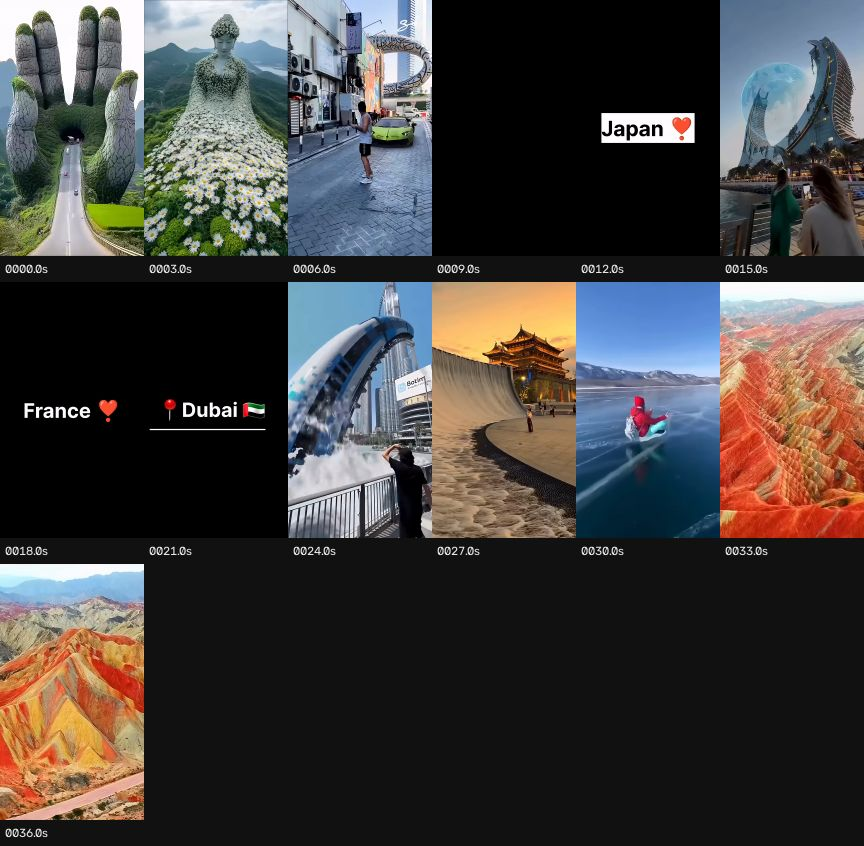
Watch · 추출 22장
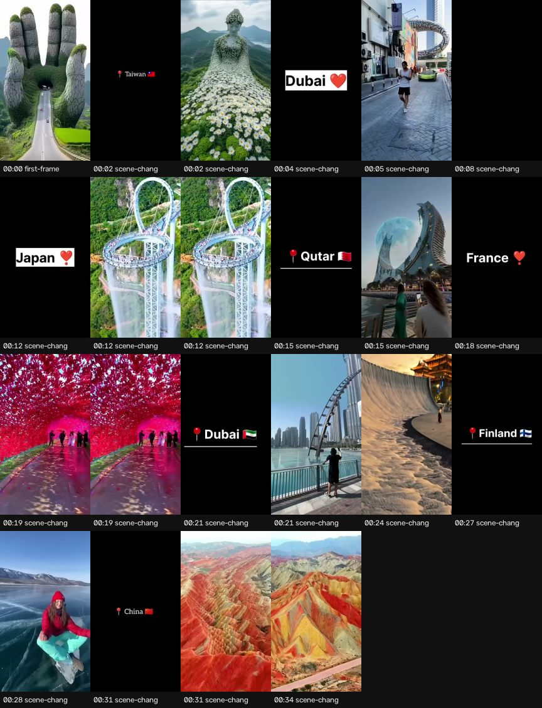
실행 기록OpenCV · 361개 0.1초 구간
36.100초 · 1,083프레임 · 자동 후보 21개 · 확인된 하드컷 21개 · 0.1초 RMS -30.6~-18.7 dBFS
측정 CSV · 측정 설정 · 자동 후보 JSON
Why Socotra Is The Weirdest Island On Earth
공개 조회 538,747 · 보관 조회 538,714 · 게시 2026-01-07 · 보관 게시 2026-01-07 · 확인 2026-11-22T18:32:19+09:00 · 공개 구독 7,560,000
후보 경계와 장면 표본 육안 대조 ·
23 자동 후보의 앞뒤 대조. 27.412초 식품 용기는 같은 구도에서 각도가 조금 달라져 하드컷 확정 제외. 20.501·21.235·22.003초는 소재가 바뀌는 경계에 초점 흐림도 관찰. 13.489초 나무가 흩어진 지형 와이드, 15.926초 나무 한 그루, 20.501초 수액 디테일. 하단 영어 자막과 순번 그래픽. 배속·효과음 정체 미확인.
연출 가설 넓은 환경과 그 장소를 대표하는 질감을 번갈아 보여주면 풍경을 기억하기 쉬울 수 있다.
원본 장면 바둑판

Watch · 추출 22장
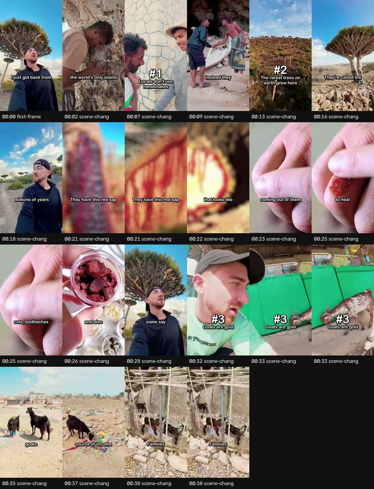
실행 기록OpenCV · 401개 0.1초 구간
40.033초 · 1,199프레임 · 자동 후보 23개 · 확인된 하드컷 22개 · 0.1초 RMS -42.9~-6.7 dBFS
측정 CSV · 측정 설정 · 자동 후보 JSON
3 Shocking Things About The World’s Narrowest Island
공개 조회 145,247 · 보관 조회 145,184 · 게시 2026-10-16 · 보관 게시 2026-10-16 · 확인 2026-11-22T18:32:19+09:00 · 공개 구독 7,560,000
장면 표본 육안 대조 ·
0초 배에서 물가로 나오고, 3.8초 해변의 사람들, 11.4초 좁은 골목을 내려다보는 화면, 15.2초 진행자, 34.2초 바다와 배. 반복되는 중앙 발화 자막을 기준으로 여러 소재를 연결한다.
원본 장면 바둑판
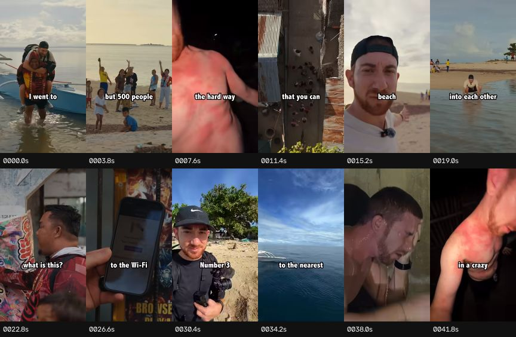
Watch · 추출 22장
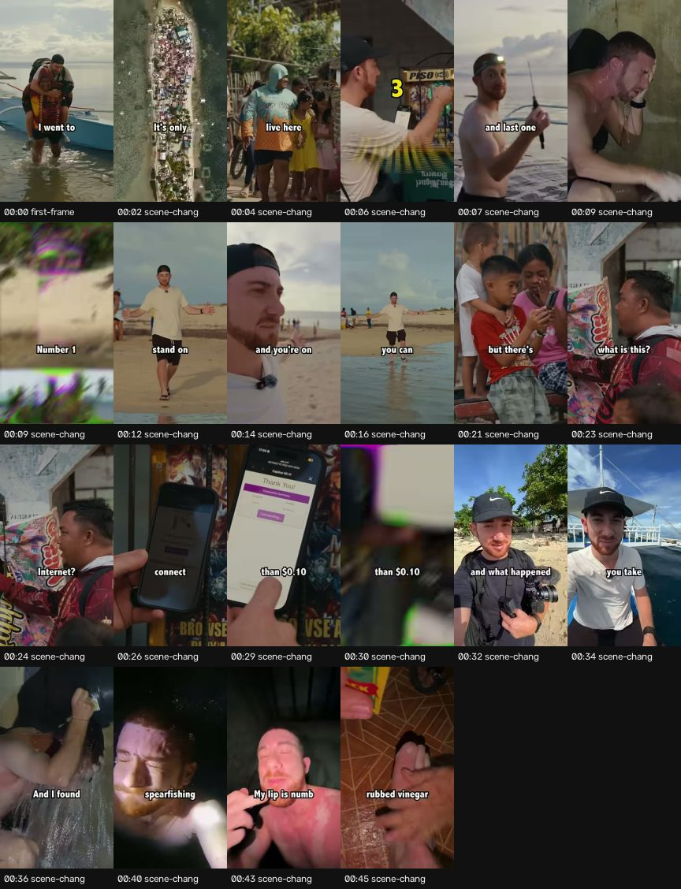
실행 기록OpenCV · 456개 0.1초 구간
45.588초 · 1,093프레임 · 자동 후보 41개 · 확인된 하드컷 미확인개 · 0.1초 RMS -34.8~-7.4 dBFS
측정 CSV · 측정 설정 · 자동 후보 JSON
I Found An Island Of Millionaires
공개 조회 131,796 · 보관 조회 131,796 · 게시 2025-11-28 · 보관 게시 2025-11-28 · 확인 2026-11-22T18:32:19+09:00 · 공개 구독 7,560,000
장면 표본 육안 대조 ·
0초 인물, 1.9초 해안 공중 와이드, 3.8초 협곡 물길 탑뷰, 11.4초 차창과 나무, 15.2초 대각으로 펼친 해안. 발화 자막과 이야기 컷이 이어진다.
원본 장면 바둑판
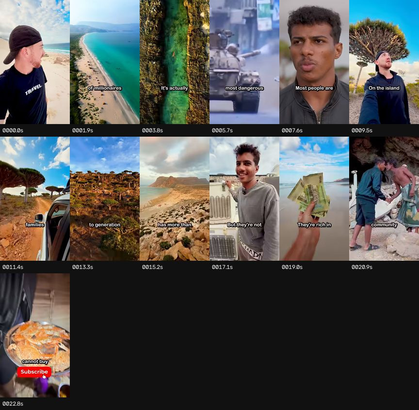
Watch · 추출 22장
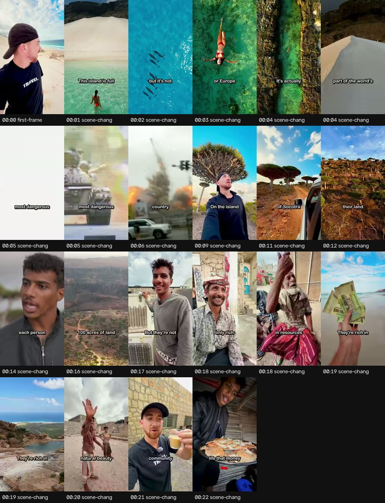
실행 기록OpenCV · 232개 0.1초 구간
23.148초 · 553프레임 · 자동 후보 25개 · 확인된 하드컷 미확인개 · 0.1초 RMS -51.7~-5.1 dBFS
측정 CSV · 측정 설정 · 자동 후보 JSON
Is this $500 Shinkansen Supreme Class Train Seat Worth it?
공개 조회 61,177 · 보관 조회 61,177 · 게시 2026-08-29 · 보관 게시 2026-08-28 · 확인 2026-11-22T18:32:22+09:00 · 공개 구독 3,730,000
장면 표본 육안 대조 ·
0초 역, 4.8초 승차, 9.6초 좌석 와이드, 19.2초 충전 단자, 48.0초 좌석 제어 화면. 하단 녹색 발화 자막이 보인다. 제품 체험형 구성이다.
원본 장면 바둑판
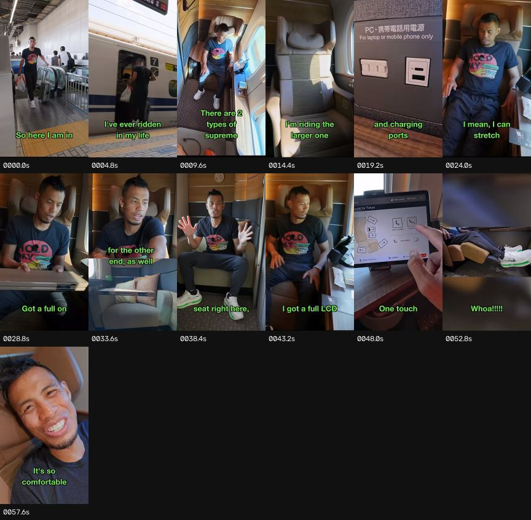
Watch · 추출 22장
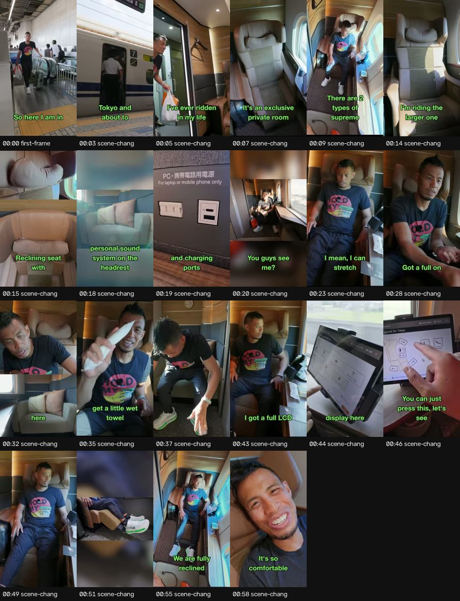
실행 기록OpenCV · 585개 0.1초 구간
58.425초 · 1,751프레임 · 자동 후보 20개 · 확인된 하드컷 미확인개 · 0.1초 RMS -58.1~-14.4 dBFS
측정 CSV · 측정 설정 · 자동 후보 JSON
Ethiopia’s Volcano Erta Ale 🌋🇪🇹 #ethiopia #volcano #lava
공개 조회 21,444 · 보관 조회 21,444 · 게시 2025-11-29 · 보관 게시 2025-11-29 · 확인 2026-11-22T18:32:22+09:00 · 공개 구독 857,000
후보 경계와 장면 표본 육안 대조 ·
14 자동 후보의 앞뒤 대조로 하드컷 확인. 3.940초 넓은 검은 암반에서 분화구 상공, 6.345초 낮은 화구 주변, 11.821초 가까운 분화구 벽, 14.693초 검은 암반 지대 광각, 33.793초 검은 전경과 주황 연기, 37.533초 드론 장비가 보이는 인서트, 40.739초 상승 시점의 원경으로 전환. 가운데 하단 영문 자막. 드론의 구체적 조종·배속·효과음 정체 미확인.
연출 가설 어두운 전경을 유지하며 높은 시점에서 멀리 보여주면 장소의 크기와 깊이가 함께 읽힐 수 있다.
원본 장면 바둑판

Watch · 추출 15장
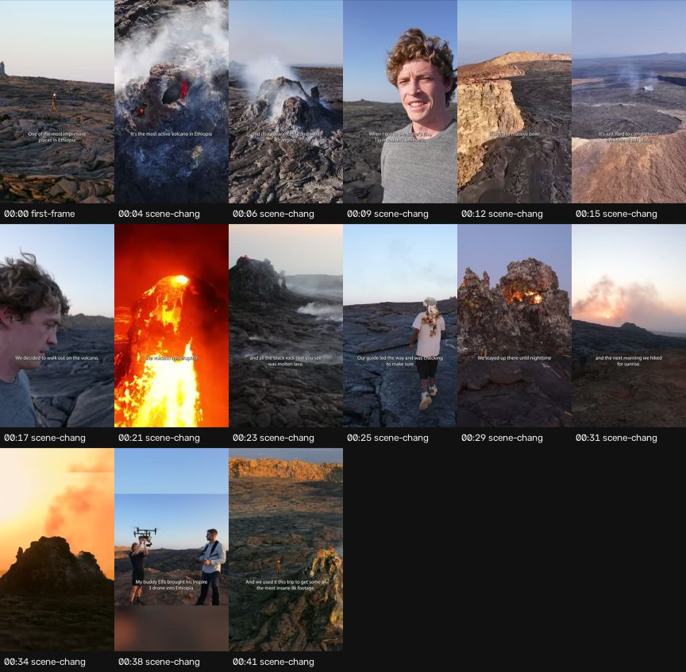
실행 기록OpenCV · 443개 0.1초 구간
44.211초 · 1,324프레임 · 자동 후보 14개 · 확인된 하드컷 14개 · 0.1초 RMS -51.0~-10.7 dBFS
측정 CSV · 측정 설정 · 자동 후보 JSON
Stadler Photo Competition #train #Stadler
공개 조회 4,506 · 보관 조회 4,504 · 게시 2026-07-18 · 보관 게시 2026-07-18 · 확인 2026-11-22T18:32:22+09:00 · 공개 구독 526,000
장면 표본 육안 대조 ·
0초 회전 안내, 3.1초 열차, 6.2초 검정 문구 카드, 12.4초 열차 정면, 18.6초 문구, 21.7초 선로에 가까운 정면, 이후 참가 문구. 열차가 보이는 일부 소재가 가로로 돌아 있다.
원본 장면 바둑판
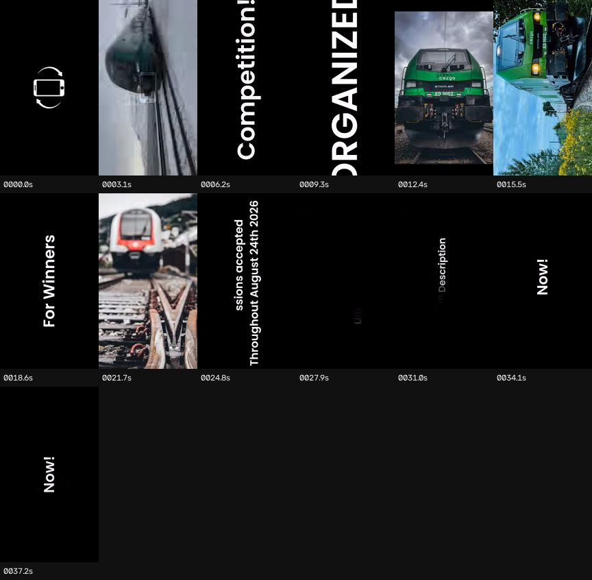
Watch · 추출 22장
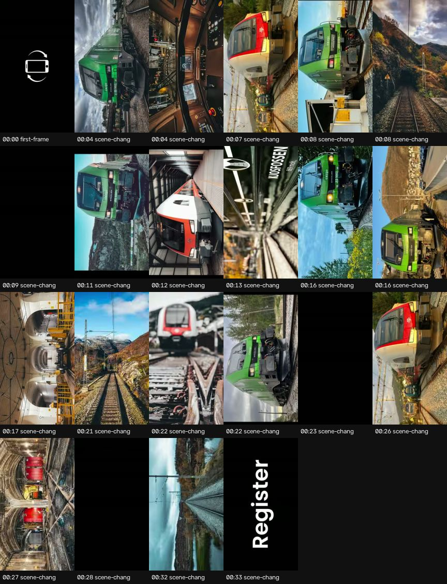
실행 기록OpenCV · 378개 0.1초 구간
37.792초 · 907프레임 · 자동 후보 58개 · 확인된 하드컷 미확인개 · 0.1초 RMS -240.0~-3.9 dBFS
측정 CSV · 측정 설정 · 자동 후보 JSON
Honestly the best part is the scenic drive 🚙 It’s officially road trip season and we could not be
공개 조회 3,185 · 보관 조회 3,185 · 게시 2026-05-17 · 보관 게시 2026-05-17 · 확인 2026-11-22T16:43:15+09:00 · 공개 구독 108,000
후보 경계와 장면 표본 육안 대조 ·
0.0초 노을 도로에서 1.100초 산악 도로, 2.200초 해를 가리키는 손과 물, 3.400초 붉은 비포장 길, 4.600초 붉은 바위 도로, 5.767초 숲과 산 사이, 6.900초 손과 전원 도로로 전환한다. 같은 상단 문구 1종이 샷을 관통한다.
연출 가설 도로 소실점이 다른 장소를 한 번의 여행처럼 보이게 할 수 있다.
원본 장면 바둑판

Watch · 추출 12장
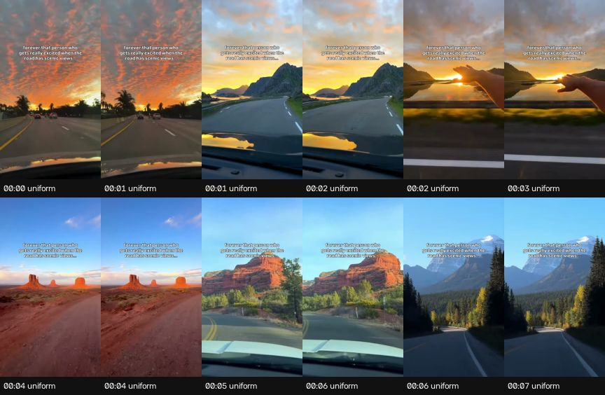
실행 기록OpenCV · 75개 0.1초 구간
7.466초 · 224프레임 · 자동 후보 6개 · 확인된 하드컷 6개 · 0.1초 RMS -22.3~-10.5 dBFS
측정 CSV · 측정 설정 · 자동 후보 JSON
2OPEe8kdtLg · Adi Spo - Diario di montagna
Sentiero dei Canyons e delle Cascate di Fanes #dolomiti #trekking #hiking #vieferrate #waterfall
공개 조회 2,104 · 보관 조회 2,104 · 게시 2026-05-29 · 보관 게시 2026-05-29 · 확인 2026-11-22T16:43:15+09:00 · 공개 구독 1,910
후보 경계와 장면 표본 육안 대조 ·
0초부터 물과 암봉을 같은 화면에 둔다. 6.633초 암벽 옆 물커튼, 11.767초 폭포·웅덩이 와이드, 18.833초 역방향 물커튼으로 이동한다. 영상 표본에서 편집 문구는 보이지 않는다.
연출 가설 같은 물을 원경과 전경에서 교대로 보여주면 관람자의 위치가 달라지는 체감을 줄 수 있다.
원본 장면 바둑판
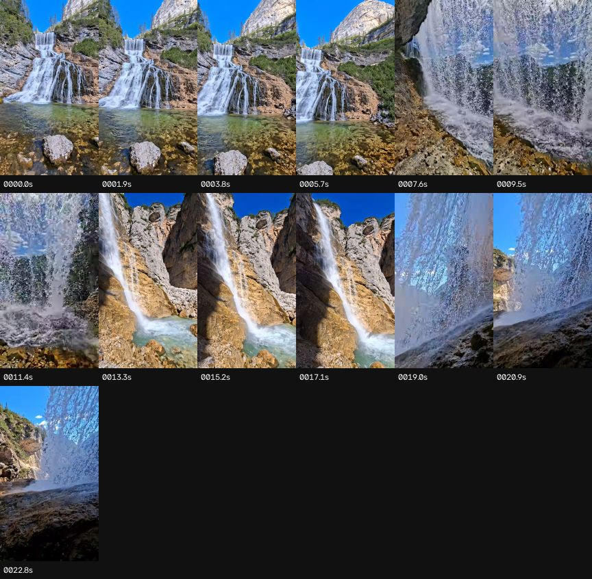
Watch · 추출 22장
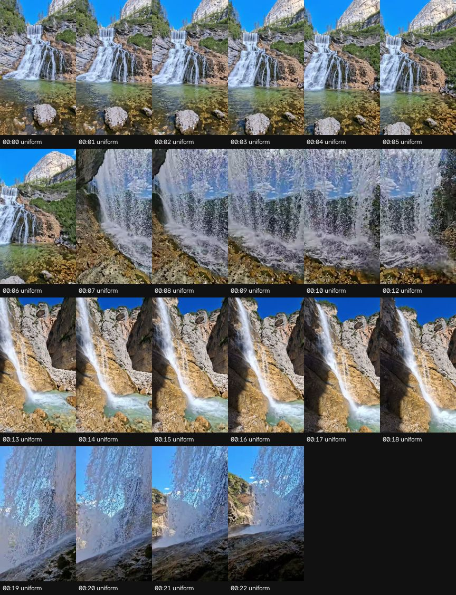
실행 기록OpenCV · 230개 0.1초 구간
23.000초 · 690프레임 · 자동 후보 3개 · 확인된 하드컷 3개 · 0.1초 RMS -26.3~-14.4 dBFS
측정 CSV · 측정 설정 · 자동 후보 JSON
Hardest climb I’ve ever done Guess where? #travel #hiking #nature #mountains #hikingadventures
공개 조회 1,747 · 보관 조회 1,747 · 게시 2026-05-23 · 보관 게시 2026-05-23 · 확인 2026-11-22T16:43:15+09:00 · 공개 구독 6,760
후보 경계와 장면 표본 육안 대조 ·
14 자동 후보를 좌→중 프레임에서 검토. 2.100은 안개 낀 암봉과 하강 시점에서 오르막 돌길 정면으로 확실한 하드컷. 나머지 후보는 페이드 과정 중 탐지되므로 정확한 새 장면 시작 프레임으로 간주하지 않음. 3.5 및 15.0에 검정 배경과 남아 있는 자막 관찰. 4.2~5.6 안개 속 골짜기가 열리고, 7.0 절벽 사이 길, 8.4 먼 수평선, 12.6 역광의 포장 산길, 14.0 가까운 암벽·먼 계곡 시차를 보여준다. 중앙 영어 가사형 자막과 우상단 워터마크 관찰. 정밀 속도 변화와 효과음 정체 미확정.
원본 장면 바둑판
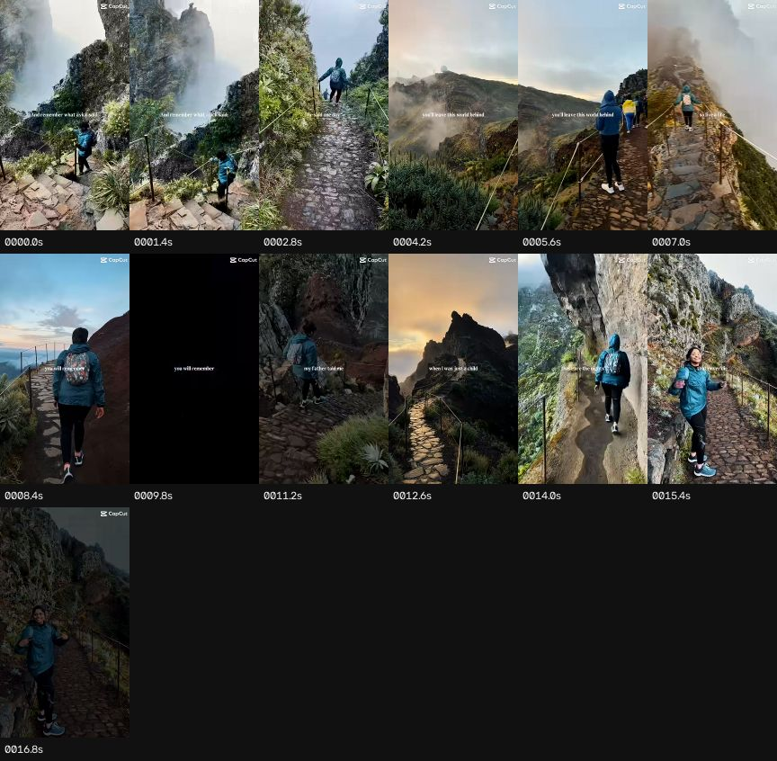
Watch · 추출 22장
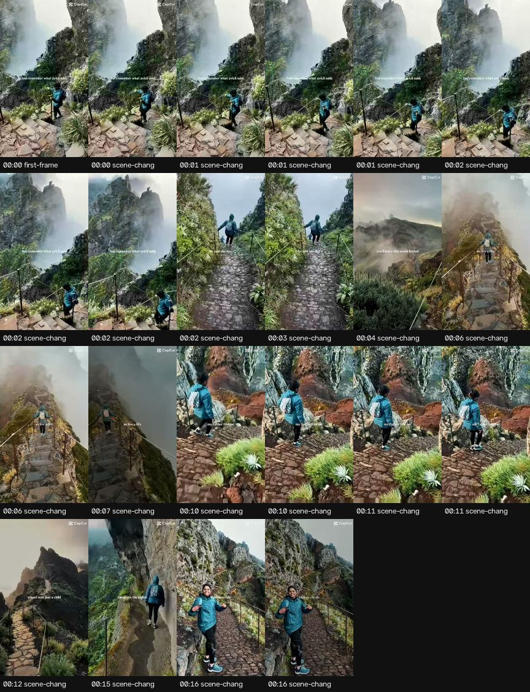
실행 기록OpenCV · 171개 0.1초 구간
17.033초 · 511프레임 · 자동 후보 14개 · 확인된 하드컷 1개 · 0.1초 RMS -240.0~-4.8 dBFS
측정 CSV · 측정 설정 · 자동 후보 JSON
✈️ One of the Most Scenic Flights in 2026 🇳🇵 Dhaka to Kathmandu | Why you should visit Nepal Ep 01
공개 조회 1,423 · 보관 조회 1,421 · 게시 2026-06-02 · 보관 게시 2026-06-02 · 확인 2026-11-22T16:43:19+09:00 · 공개 구독 13,900
후보 경계와 장면 표본 육안 대조 ·
35 자동 후보를 좌→중 프레임에서 모두 확인. 같은 소재여도 22.670 식판 위 손과 음식 위치가 통째로 바뀌고 29.867·31.049는 날개를 남긴 채 지형과 프레이밍이 불연속으로 바뀐다. 4.021 구름·근경 날개에서 계곡 깊이가 보이는 구도로 전환, 19.832 활주로에서 도시 항공 전망으로 전환. 39.597 깃발 뒤 길, 43.618 폭포, 44.530 다리, 45.375 물길, 46.354 인물과 깃발. 상단 제목 그래픽과 하단 발화 자막 관찰. 항공기 창문 시점. 후보 외 경계와 속도 변화, 효과음 정체 미확정.
원본 장면 바둑판
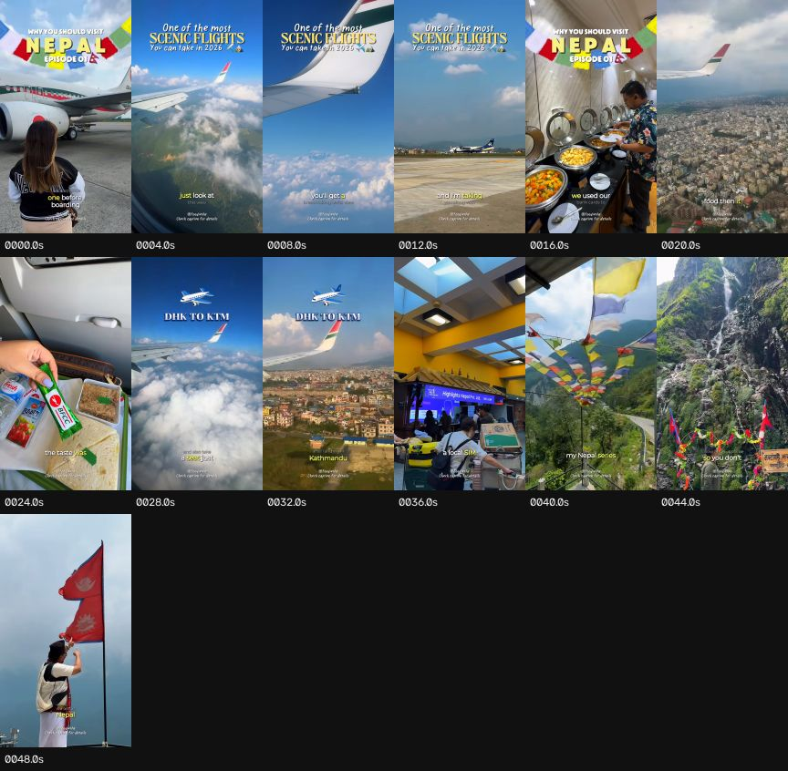
Watch · 추출 22장
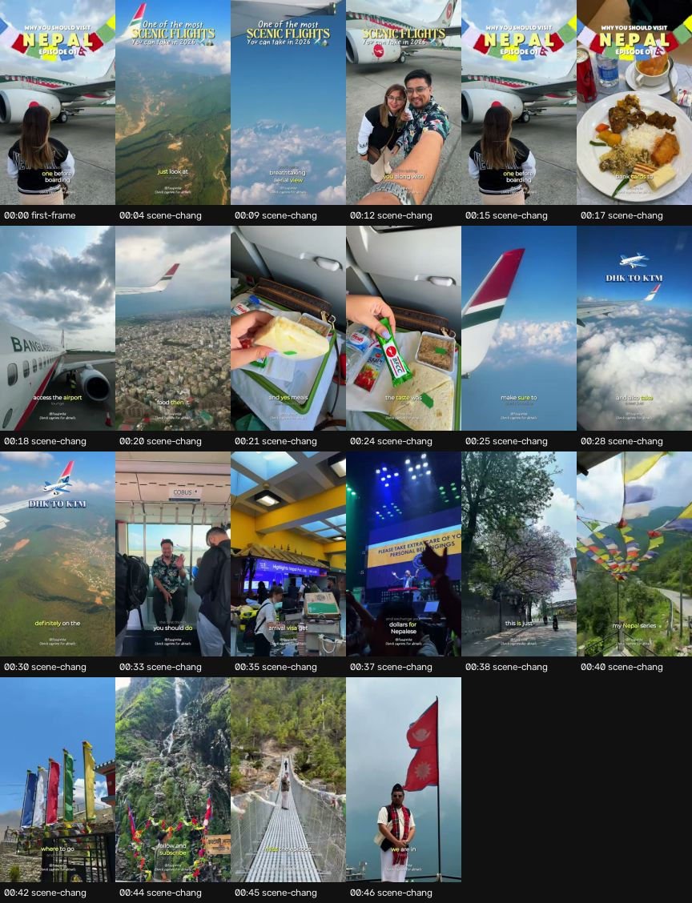
실행 기록OpenCV · 486개 0.1초 구간
48.585초 · 1,438프레임 · 자동 후보 35개 · 확인된 하드컷 35개 · 0.1초 RMS -44.0~-2.3 dBFS
측정 CSV · 측정 설정 · 자동 후보 JSON
이 풍경 무료라고? 한강 따라 펼쳐진 노란 꽃길 #남양주삼패지구한강공원 #삼패공원 #주말에가볼만한곳 #삼패공원자작나무길 #남양주 #남양주가볼만한곳 #서울근교여행 #한강공원
공개 조회 1,327 · 보관 조회 1,326 · 게시 2026-06-05 · 보관 게시 2026-06-05 · 확인 2026-11-22T16:43:19+09:00 · 공개 구독 2,610
후보 경계와 장면 표본 육안 대조 ·
0초 자작나무 사이 꽃밭, 2.267초 자작나무 통로, 3.300초 노란 꽃길, 4.867초 강과 도시 윤곽을 담은 높고 넓은 전망. 마지막 3.633초 전망을 유지한다. 인물은 구도·스케일 기준이고 영상 표본에서 편집 문구는 보이지 않는다.
연출 가설 앞을 가린 나무에서 꽃길을 지나 한 번에 넓어지는 시야가 방문에 대한 기대를 만들 수 있다.
원본 장면 바둑판

Watch · 추출 9장
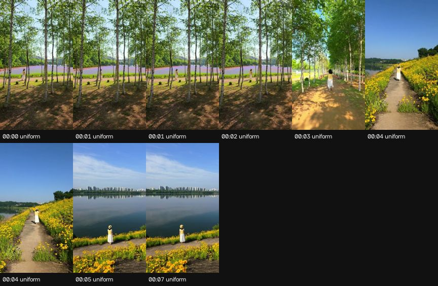
실행 기록OpenCV · 85개 0.1초 구간
8.500초 · 255프레임 · 자동 후보 3개 · 확인된 하드컷 3개 · 0.1초 RMS -23.9~-7.3 dBFS
측정 CSV · 측정 설정 · 자동 후보 JSON
탑골공원 풍경. #삼일문 #travel #shorts
공개 조회 1,243 · 보관 조회 1,243 · 게시 2026-06-07 · 보관 게시 2026-06-06 · 확인 2026-11-22T16:45:09+09:00 · 공개 구독 6,310
장면 표본 육안 대조 ·
0초 차량과 길, 5.4초 안내판, 16.2초 야외 공연, 27.0초 지붕과 기둥, 이후 관중과 공연. 상단 고정 문구. 장소의 무인 풍경보다 인물과 행사 기록이 중심이다.
원본 장면 바둑판
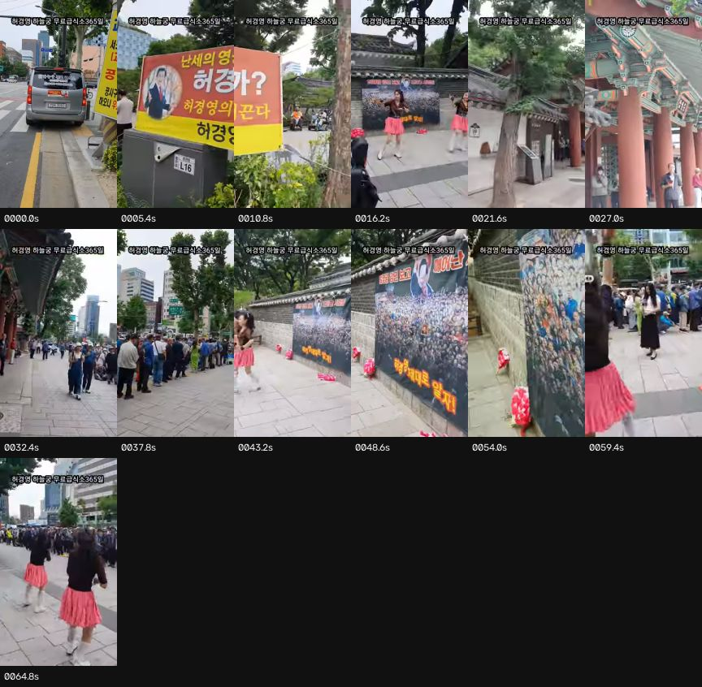
Watch · 추출 22장
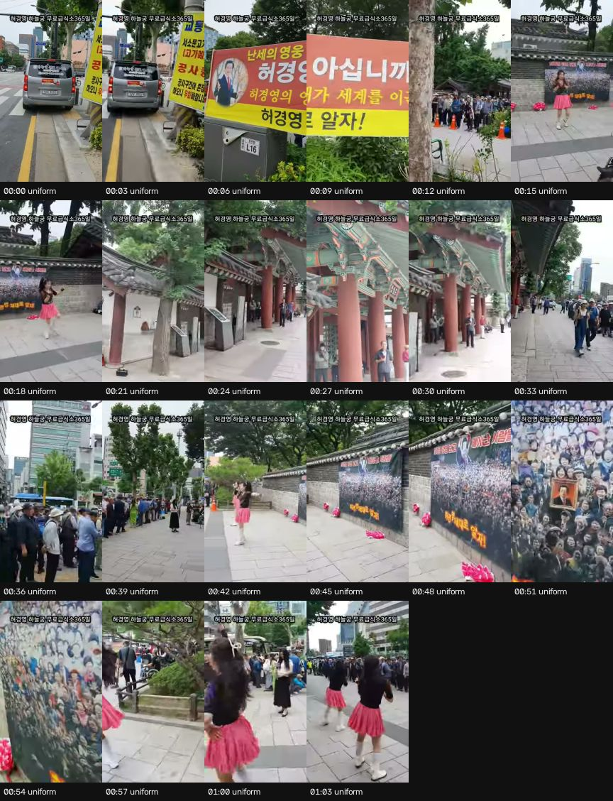
실행 기록OpenCV · 657개 0.1초 구간
65.633초 · 1,969프레임 · 자동 후보 0개 · 확인된 하드컷 미확인개 · 0.1초 RMS -54.5~-7.5 dBFS
측정 CSV · 측정 설정 · 자동 후보 JSON
8UdRlKOUN-Y · Central Asian Family Life
Her Beauty, Nature's Masterpiece Её красота – шедевр природы.
공개 조회 1,231 · 보관 조회 1,231 · 게시 2026-06-02 · 보관 게시 2026-06-02 · 확인 2026-11-22T16:43:19+09:00 · 공개 구독 34
장면 표본 육안 대조 ·
0–0.9초 산 계곡이 보인다. 1.8–4.5초 손과 소매가 렌즈 근처를 가리고, 5.4–10.8초 인물이 옆으로 들어와 산 앞에 선다. 가림 구간의 숨은 편집과 자막 여부는 미확정이다.
원본 장면 바둑판
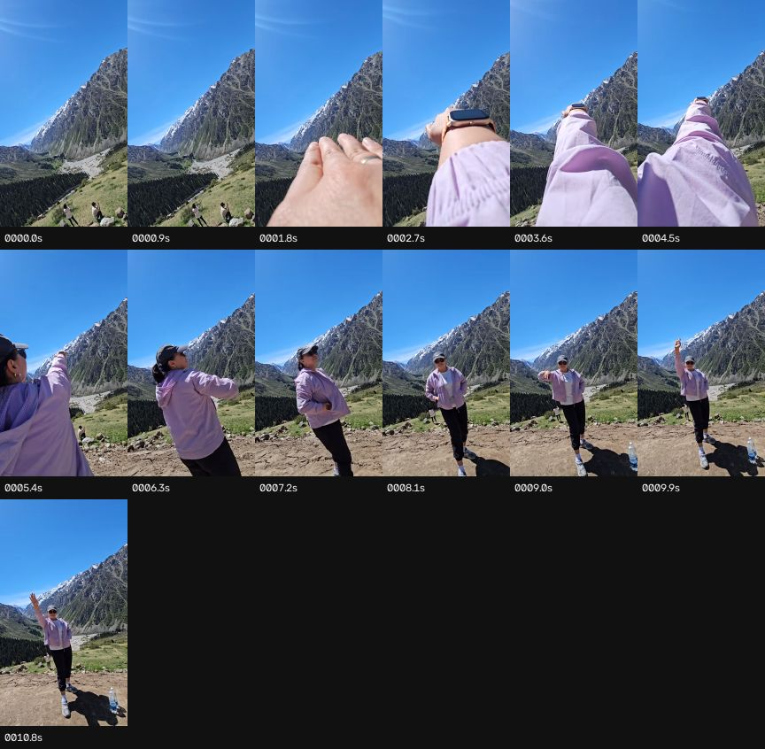
Watch · 추출 12장
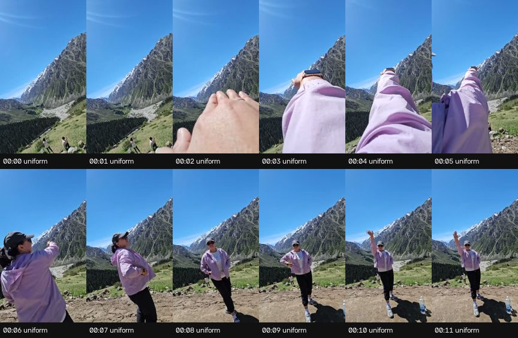
실행 기록OpenCV · 117개 0.1초 구간
11.647초 · 344프레임 · 자동 후보 0개 · 확인된 하드컷 미확인개 · 0.1초 RMS -29.2~-5.4 dBFS
측정 CSV · 측정 설정 · 자동 후보 JSON
fa2a41oWjtY · Natali AI Creations | Cozy Fantasy Ambience
☕ Cozy sunrise in the mountains by the lake (20 sec) • Calm morning atmosphere • Breathe and relax
공개 조회 551 · 보관 조회 551 · 게시 2026-04-23 · 보관 게시 2026-04-23 · 확인 2026-11-22T16:43:22+09:00 · 공개 구독 218
장면 표본 육안 대조 ·
0–19.2초 빈 의자와 찻잔, 호수 반사, 먼 산이 거의 같은 위치에 유지된다. 상하 반사의 색 관계가 뚜렷하다. 실제 시설·촬영 여부는 미확인이다.
원본 장면 바둑판
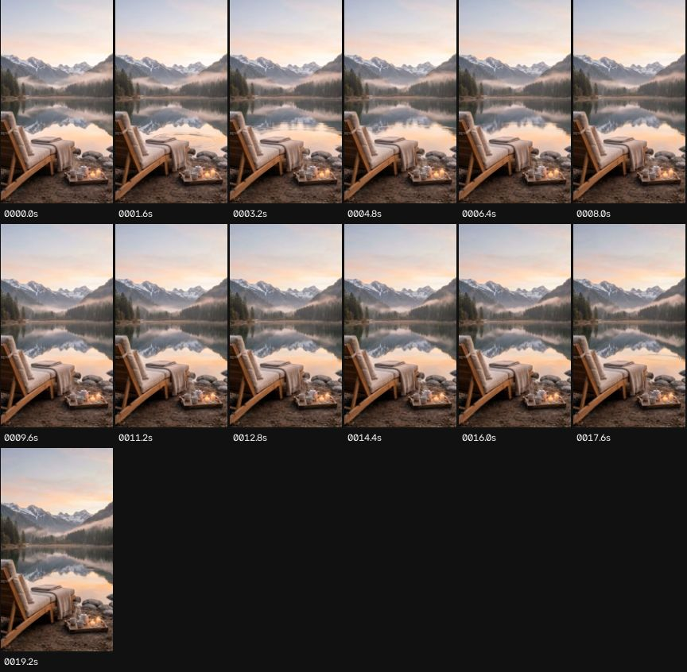
Watch · 추출 9장
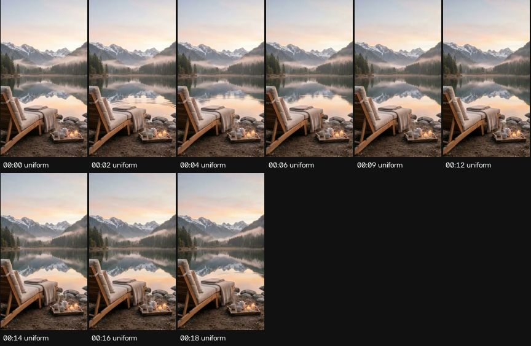
실행 기록OpenCV · 200개 0.1초 구간
20.000초 · 480프레임 · 자동 후보 0개 · 확인된 하드컷 미확인개 · 0.1초 RMS -95.8~-40.4 dBFS
측정 CSV · 측정 설정 · 자동 후보 JSON
traveling ideas # india places#viralshorts #trendingshorts #love #beautiful places💝🚗
공개 조회 336 · 보관 조회 336 · 게시 2026-06-03 · 보관 게시 2026-06-03 · 확인 2026-11-22T16:43:22+09:00 · 공개 구독 1,880
후보 경계와 장면 표본 육안 대조 ·
0초부터 차량 측면에서 도로가 움직인다. 3.567초 깃발이 있는 교량, 7.433초 풀, 9.333초 계곡, 10.733초 바위 웅덩이, 12.733초 산 전망, 14.800초 내리막 숲, 16.767초 강변으로 넘어간다. 위치를 소개하는 상단 문구 1종이 보인다.
연출 가설 연속된 진행 방향과 반복되는 근경·원경 차이가 이동 감각을 준다.
원본 장면 바둑판

Watch · 추출 11장
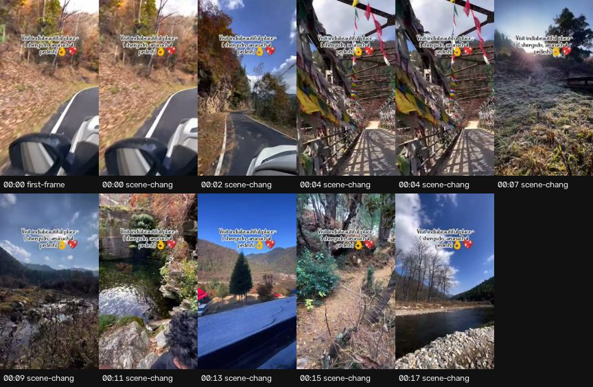
실행 기록OpenCV · 209개 0.1초 구간
20.900초 · 627프레임 · 자동 후보 7개 · 확인된 하드컷 7개 · 0.1초 RMS -28.8~-3.8 dBFS
측정 CSV · 측정 설정 · 자동 후보 JSON
qSbSgRa0lhE · Alexander Nakarada - CreatorChords
Cinematic Fantasy Music for Travel & Mountain Scenes #RoyaltyFreeMusic #CopyrightFreeMusic
공개 조회 321 · 보관 조회 321 · 게시 2026-05-11 · 보관 게시 2026-05-11 · 확인 2026-11-22T16:43:23+09:00 · 공개 구독 90,900
장면 표본 육안 대조 ·
0–27.6초 판타지 인물·성의 그림과 음원 홍보 문구가 계속 보인다. 여행지 구조 또는 실제 드론 동선의 근거로 쓰지 않는다.
원본 장면 바둑판
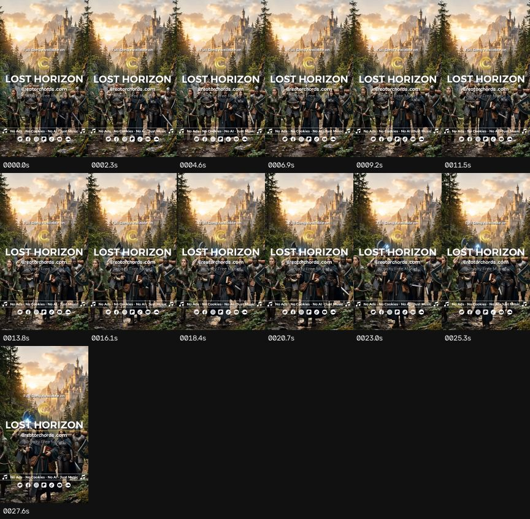
Watch · 추출 22장
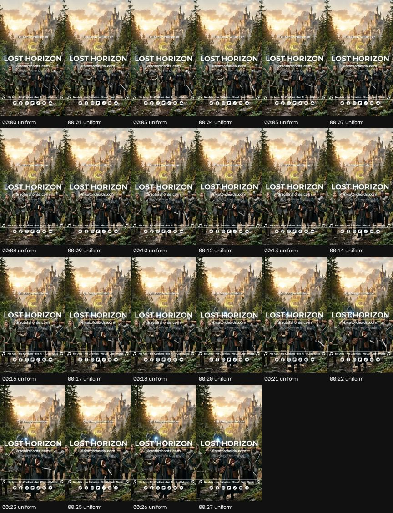
실행 기록OpenCV · 287개 0.1초 구간
28.633초 · 859프레임 · 자동 후보 0개 · 확인된 하드컷 미확인개 · 0.1초 RMS -14.6~-7.0 dBFS
측정 CSV · 측정 설정 · 자동 후보 JSON
❄️ Nature in its softest form ✨ #nature #ecovibes #explore #adventure #exploremore #mountains
공개 조회 290 · 보관 조회 290 · 게시 2026-06-05 · 보관 게시 2026-06-05 · 확인 2026-11-22T16:43:23+09:00 · 공개 구독 17
장면 표본 육안 대조 ·
0–4.8초 눈 덮인 고정 배경에서 가까운 바위와 나무 줄기가 더 빨리 지나간다. 낮은 대비와 횡단 시차가 뚜렷하다. 표본에서 문구는 보이지 않는다.
원본 장면 바둑판

Watch · 추출 10장
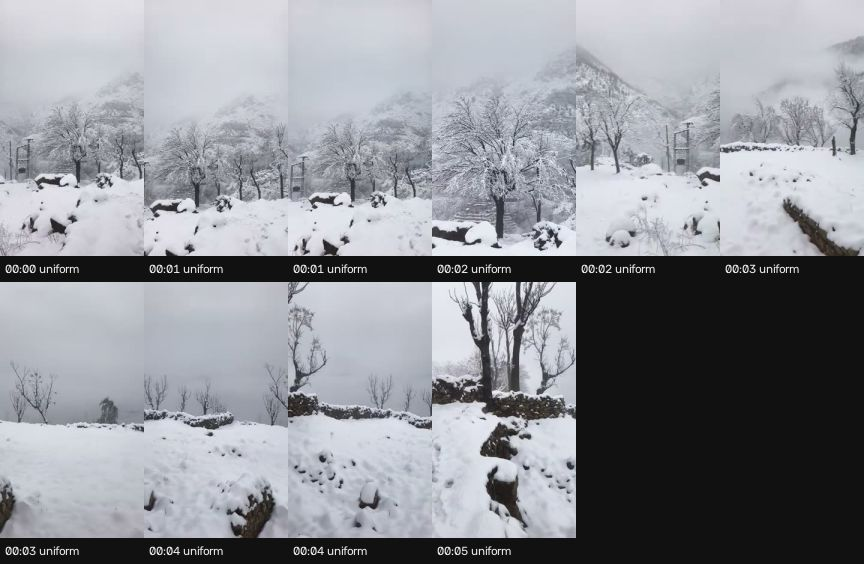
실행 기록OpenCV · 51개 0.1초 구간
5.010초 · 150프레임 · 자동 후보 0개 · 확인된 하드컷 미확인개 · 0.1초 RMS -151.6~-36.4 dBFS
측정 CSV · 측정 설정 · 자동 후보 JSON
SPOT INDAH DI JAWA BARAT #nature #sunrise #jawabarat #beautiful by IG @widiniss
공개 조회 252 · 보관 조회 252 · 게시 2026-05-27 · 보관 게시 2026-05-27 · 확인 2026-11-22T16:43:25+09:00 · 공개 구독 9,110
장면 표본 육안 대조 ·
0초 데크와 숲을 비스듬히 내려다보다 3.7초 데크 중앙을 정면으로 잡는다. 7.4초부터 난간 소실점과 햇빛 방향이 명확하며 37.0초까지 전망 방향이 유지된다. 40.7초와 44.4초는 검정 종료 카드다. 타이틀, 작은 보조 문구와 계정 표시가 관찰된다. 자동 후보 0개의 한계를 보여준다.
연출 가설 난간을 따라 전진하다 전망 방향에서 안정되는 흐름은 숙소 풀 코핑 구도에 응용할 수 있다.
원본 장면 바둑판
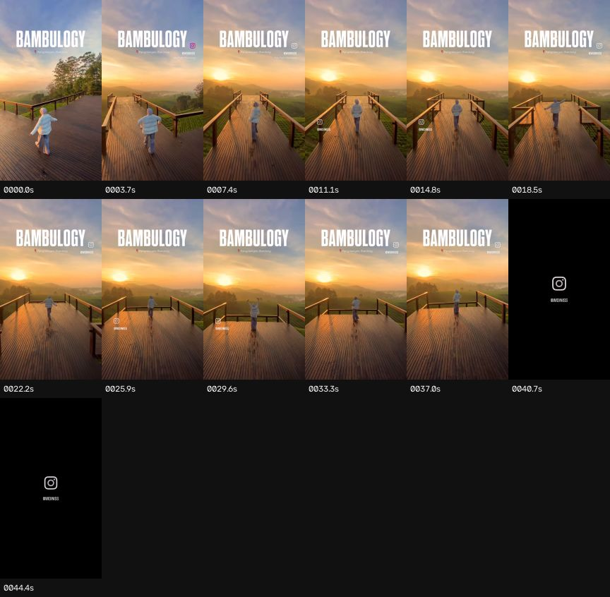
Watch · 추출 21장
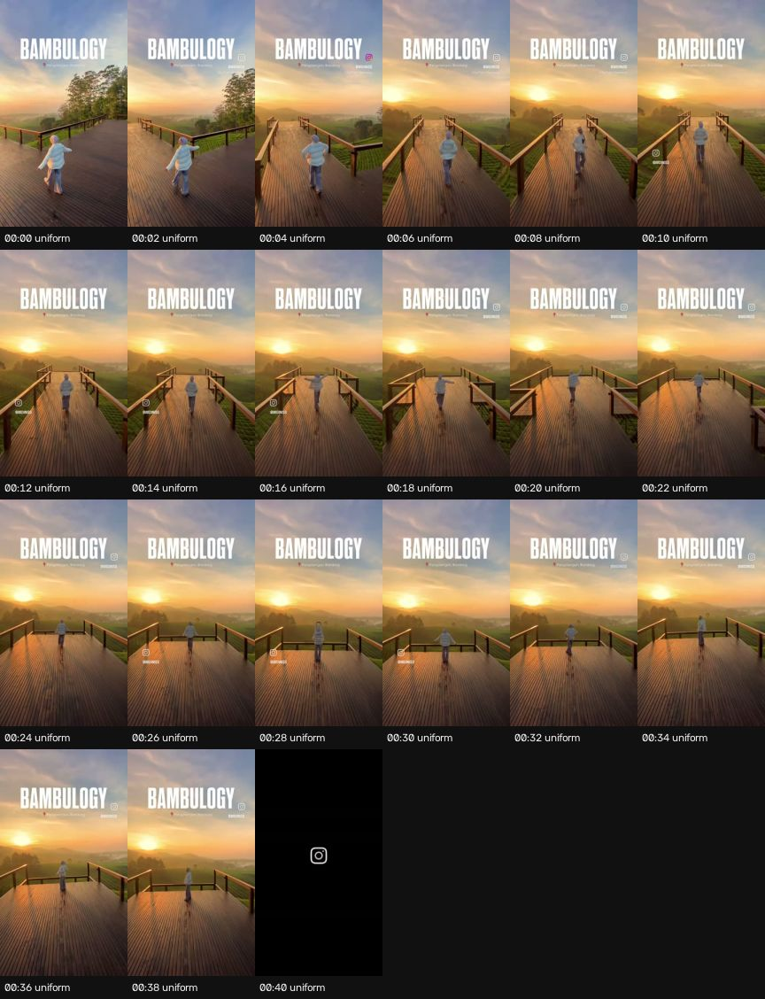
실행 기록OpenCV · 445개 0.1초 구간
44.466초 · 1,334프레임 · 자동 후보 0개 · 확인된 하드컷 미확인개 · 0.1초 RMS -240.0~-1.4 dBFS
측정 CSV · 측정 설정 · 자동 후보 JSON
O1EP67VvrcA · Chris Bothell Photography
Beauty is Everywhere #drone #nature #beautyofnature
공개 조회 137 · 보관 조회 137 · 게시 2026-06-02 · 보관 게시 2026-06-02 · 확인 2026-11-22T16:43:26+09:00 · 공개 구독 182
장면 표본 육안 대조 ·
0–13.2초 표본에서 낮은 태양, 굽은 길과 언덕이 유지되고 가까운 지붕/비탈이 움직인다. 2.4–7.2초 표본에 중앙 문구 1종, 하단 서명 1종이 보인다. 14.4초 표본에서 어두워지는 종결 확인. 메타에는 드론 태그가 있다.
연출 가설 가까운 비탈이 화면을 지나가고 먼 산은 안정적으로 남는 시차가 실제로 날아가는 감각을 줄 수 있다.
원본 장면 바둑판
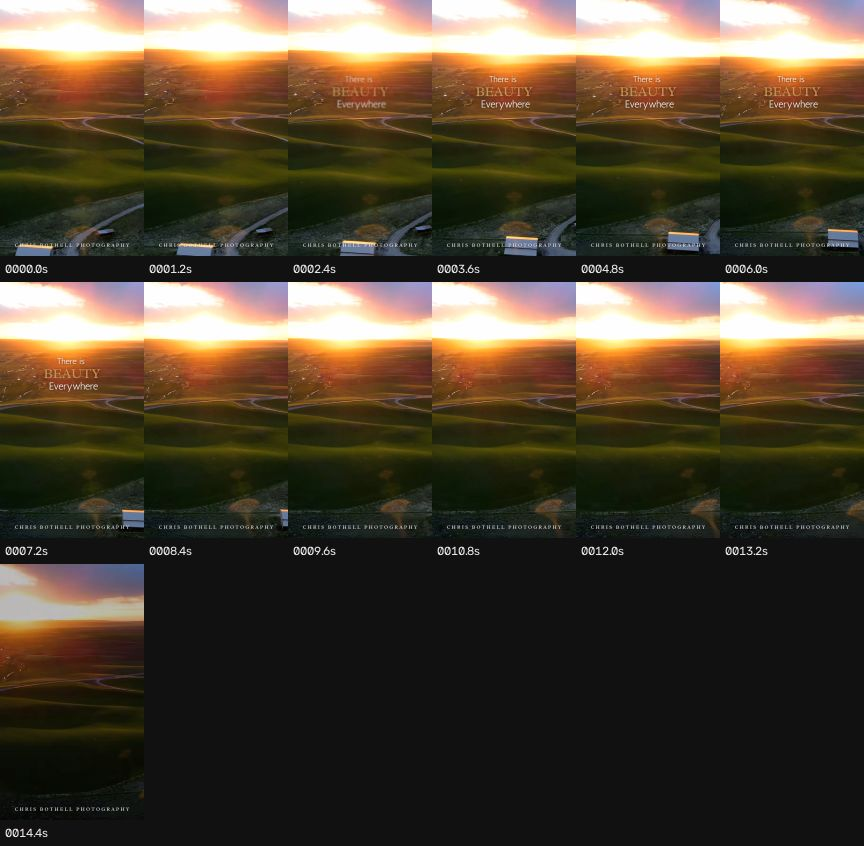
Watch · 추출 15장
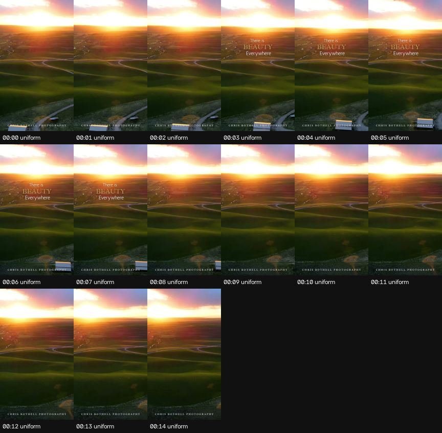
실행 기록OpenCV · 150개 0.1초 구간
14.966초 · 449프레임 · 자동 후보 0개 · 확인된 하드컷 미확인개 · 0.1초 RMS -55.8~-9.4 dBFS
측정 CSV · 측정 설정 · 자동 후보 JSON
dreamscape travels 🧳 8882000090 www.dreamscapetravels.in #travel #mountains #monastries #winter
공개 조회 미확인 · 보관 조회 71 · 게시 미확인 · 보관 게시 2026-05-30 · 공개 구독 미확인
미분석 · ERROR: [youtube] pGTFriREGSM: This video is not available
Title: 🌄 Sunrise Over the Majestic Mountains | Relaxing Nature Scenery in 4K
공개 조회 16 · 보관 조회 16 · 게시 2026-06-04 · 보관 게시 2026-06-04 · 확인 2026-11-22T16:43:27+09:00 · 공개 구독 16
장면 표본 육안 대조 ·
0–7.2초 나무 전경, 호수/안개 중경, 설산 원경이 초기부터 보인다. 마지막 표본까지 산 윤곽이 유지된다. 장소와 합성 방법은 미확인이다.
원본 장면 바둑판
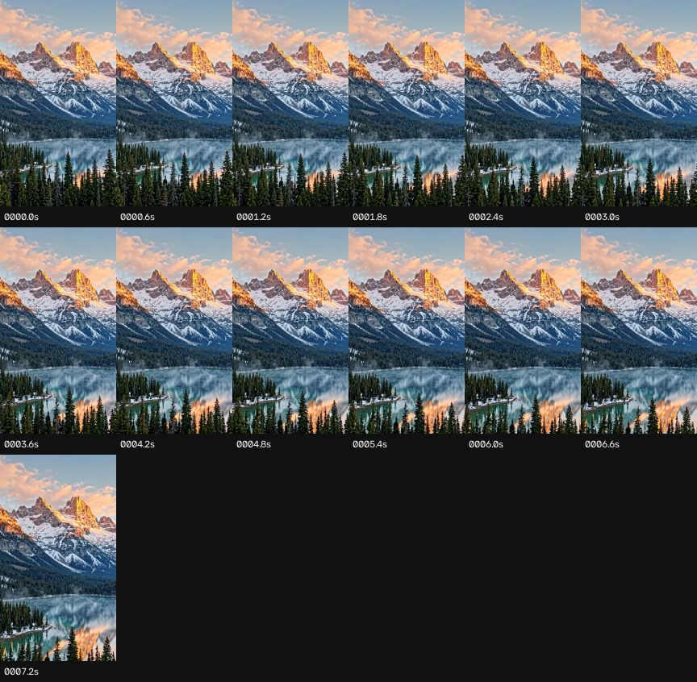
Watch · 추출 6장
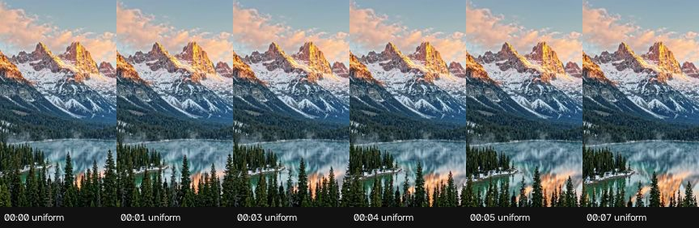
실행 기록OpenCV · 81개 0.1초 구간
8.042초 · 193프레임 · 자동 후보 0개 · 확인된 하드컷 미확인개 · 0.1초 RMS -36.7~-24.5 dBFS
측정 CSV · 측정 설정 · 자동 후보 JSON
Instagram · 조회순
Dcrk799h4eG · naynay.flightsavings
send to ur friends u have been talking about a trip with!!
공개 조회 미확인 · 보관 조회 13,113,099 · 게시 미확인 · 보관 게시 2026-08-31 · 확인 2026-11-22T16:44:58+09:00 · 공개 구독 미확인
미분석 · 로그아웃 공개 페이지에서 게시물 이용 불가.
DdCYpdWFfzs · gisselle.travelhacks
Send this to your travel bestie!!
공개 조회 미확인 · 보관 조회 12,053,010 · 게시 2026-09-09T03:59:45+09:00 · 보관 게시 2026-09-09 · 확인 2026-11-22T16:44:59+09:00 · 공개 구독 미확인
장면 표본 육안 대조 ·
0–6.6초 인물 두 명이 겹친 화면, 13.2초 이후 안경을 쓴 진행자, 39.6초 이메일 화면, 46.2초 이후 다시 진행자. 항공권 조언 자막이 이어진다.
원본 장면 바둑판

Watch · 추출 8장
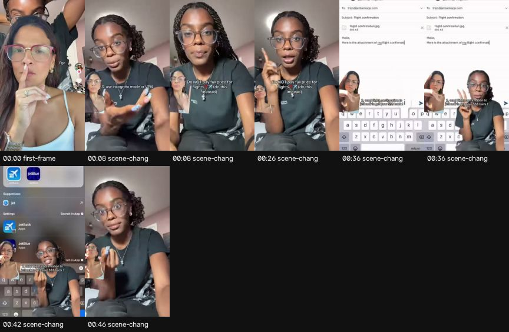
실행 기록OpenCV · 803개 0.1초 구간
80.233초 · 2,407프레임 · 자동 후보 6개 · 확인된 하드컷 미확인개 · 0.1초 RMS -199.7~-5.5 dBFS
측정 CSV · 측정 설정 · 자동 후보 JSON
Next time, I swear I‘ll try to meditate before going through security 🥲
공개 조회 미확인 · 보관 조회 9,533,107 · 게시 2025-07-12T04:55:05+09:00 · 보관 게시 2025-07-12 · 확인 2026-11-22T16:45:00+09:00 · 공개 구독 미확인
장면 표본 육안 대조 ·
0–5.5초 보안검색대 역할로 배치된 고양이와 지나가는 소품이 같은 구도에서 보인다. 위쪽 고정 자막 1종. 시설 구도보다 코미디가 중심이다.
원본 장면 바둑판

Watch · 추출 6장
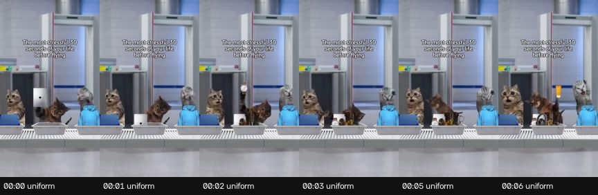
실행 기록OpenCV · 60개 0.1초 구간
5.966초 · 179프레임 · 자동 후보 0개 · 확인된 하드컷 미확인개 · 0.1초 RMS -31.0~-11.1 dBFS
측정 CSV · 측정 설정 · 자동 후보 JSON
진짜 이거 누가 기획했냐.. 상 줘라 진짜ㅠ *디즈니코리아의 단순초청으로 방문했습니다. @disneykorea
공개 조회 미확인 · 보관 조회 7,904,523 · 게시 2026-11-01T17:52:43+09:00 · 보관 게시 2026-11-01 · 확인 2026-11-22T16:45:01+09:00 · 공개 구독 미확인
후보 경계와 장면 표본 육안 대조 ·
자동 후보 0. Watch 개요 표본에서 같은 수변 조명과 관객 실루엣을 하단에 유지한다. 0~15.3초 보라색 야간 드론 형태, 20.4~30.6초 점이 흩어지며 형상 약화, 35.7~56.1초 붉은 다른 형상이 같은 공간에 나타난다. 상단 한글 반응 문구가 바뀐다. 이는 고정 관람 위치에서 촬영한 드론 조명 쇼로 보이며 저고도 드론 카메라 움직임의 근거로 쓰지 않는다. 실제 무컷 여부·배속·효과음은 미확인.
원본 장면 바둑판

Watch · 추출 18장
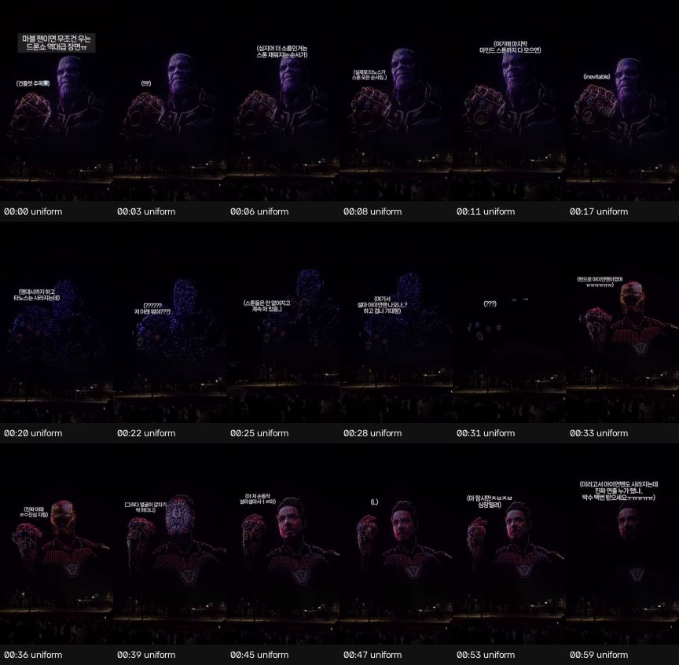
실행 기록OpenCV · 612개 0.1초 구간
61.200초 · 1,836프레임 · 자동 후보 0개 · 확인된 하드컷 0개 · 0.1초 RMS -26.9~-6.0 dBFS
측정 CSV · 측정 설정 · 자동 후보 JSON
Comment “bag” if you want me to send you the link to this coupling system luggage set 🙌🧳 I had to jump on this trend with this epic room!
공개 조회 미확인 · 보관 조회 7,097,958 · 게시 미확인 · 보관 게시 2026-08-15 · 공개 구독 미확인
기존 분석 인용 ·
보행과 가림을 거쳐 아치/물, 그네, 풀과 전망으로 이동. Watch 균등 14장. 자동 컷 후보 0개이며 실제 컷 전수는 미확정.
기존 Watch와 OpenCV 보고서
Cheapest Times to Book Flights! ✈️ Never pay full price again! Watch to find out the absolute best days and times to lock in the lowest tick
공개 조회 미확인 · 보관 조회 6,732,321 · 게시 2026-07-16T19:30:07+09:00 · 보관 게시 2026-07-16 · 확인 2026-11-22T16:45:03+09:00 · 공개 구독 미확인
장면 표본 육안 대조 ·
0초 어두운 인물, 2.2초 공항의 같은 진행자와 비행기 삽화, 8.8–19.8초 시간대 오버레이. 항공권 정보형이며 실제 이동 경로는 미확인이다.
원본 장면 바둑판

Watch · 추출 10장
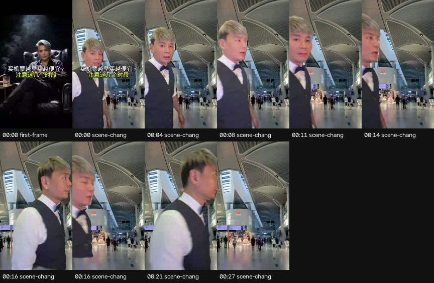
실행 기록OpenCV · 265개 0.1초 구간
26.480초 · 662프레임 · 자동 후보 4개 · 확인된 하드컷 미확인개 · 0.1초 RMS -53.1~-6.8 dBFS
측정 CSV · 측정 설정 · 자동 후보 JSON
11월 부산에 가야하는 이유 🎆 드디어 올해 일정 떴어요! 일 년 중 제일 아름다운 날은 바로 부산불꽃축제 ✨ 개인적으로 광안대교를 배경으로 바다 위에서 펼쳐지는 불꽃이 정말 장관인데요 ...! 서울불꽃축제와는 또 다른 느낌이라 한 번쯤은 꼭 보시는
공개 조회 미확인 · 보관 조회 5,903,805 · 게시 미확인 · 보관 게시 2026-08-31 · 확인 2026-11-22T16:45:04+09:00 · 공개 구독 미확인
후보 경계와 장면 표본 육안 대조 ·
4개 자동 후보의 좌→중 프레임 비교. 4.067은 테이블·난간 위치가 유지된 불꽃 플래시. 5.167은 카메라 구도와 배경 불꽃 패턴 동시 전환, 6.167은 창·문 지지대 위치와 대형 불꽃이 동시에 바뀌는 컷, 8.433은 수면·난간 근경에서 더 넓고 어두운 실내 창틀로 컷. 초반 정면 유리 문틀 너머 난간·테이블과 불꽃이 보이고, 3.2~4.8초 근경을 잡은 채 시야가 넓어진다. 7.2~8.0초 수면 반사와 불꽃을 같이 보여주고 결말은 실내 액자로 돌아온다. 상단 한영 문구 유지. 배속 및 파형 기반 효과음 정체 미확인.
원본 장면 바둑판
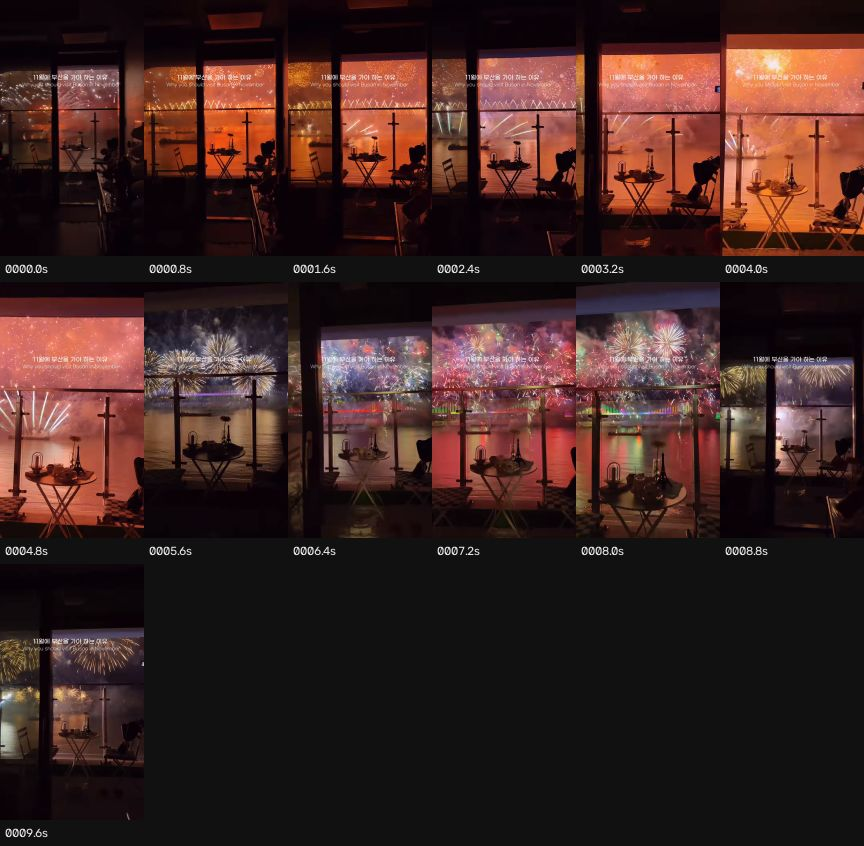
Watch · 추출 12장
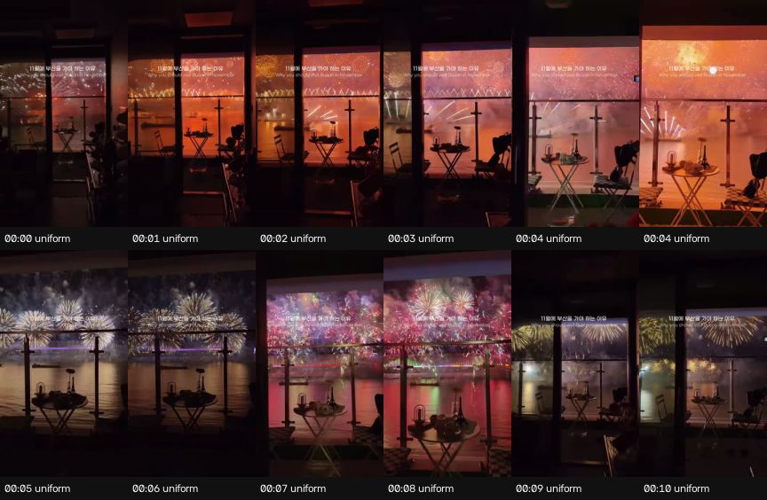
실행 기록OpenCV · 104개 0.1초 구간
10.400초 · 312프레임 · 자동 후보 4개 · 확인된 하드컷 3개 · 0.1초 RMS -21.8~-7.6 dBFS
측정 CSV · 측정 설정 · 자동 후보 JSON
Late night flights✈️🤍
공개 조회 미확인 · 보관 조회 5,897,179 · 게시 2026-09-24T22:46:51+09:00 · 보관 게시 2026-09-26 · 확인 2026-11-22T16:45:05+09:00 · 공개 구독 미확인
장면 표본 육안 대조 ·
0초 밤길, 1–5초 조명과 공항 천장·수하물, 6–9초 여권과 탑승, 10초 창문으로 도시 조명이 열리고 11초 공항 전광판. 중앙 작은 영문 문구가 공통된다.
원본 장면 바둑판

Watch · 추출 15장
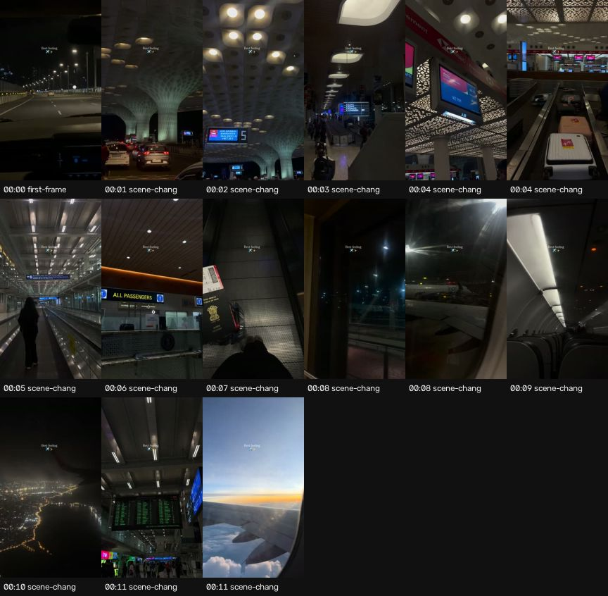
실행 기록OpenCV · 120개 0.1초 구간
11.966초 · 359프레임 · 자동 후보 14개 · 확인된 하드컷 미확인개 · 0.1초 RMS -26.0~-6.6 dBFS
측정 CSV · 측정 설정 · 자동 후보 JSON
Best tip EVER for booking flights and saving money ✈️✈️✈️✈️
공개 조회 미확인 · 보관 조회 5,836,121 · 게시 2025-09-22T20:34:37+09:00 · 보관 게시 2025-09-22 · 확인 2026-11-22T16:45:06+09:00 · 공개 구독 미확인
장면 표본 육안 대조 ·
0–15.6초 차 안 진행자, 20.8초 공항 안 셀피, 46.8초 종이 표, 끝까지 공항에 있는 진행자. 상단 제목 고정, 하단 키워드 자막 변화.
원본 장면 바둑판

Watch · 추출 22장
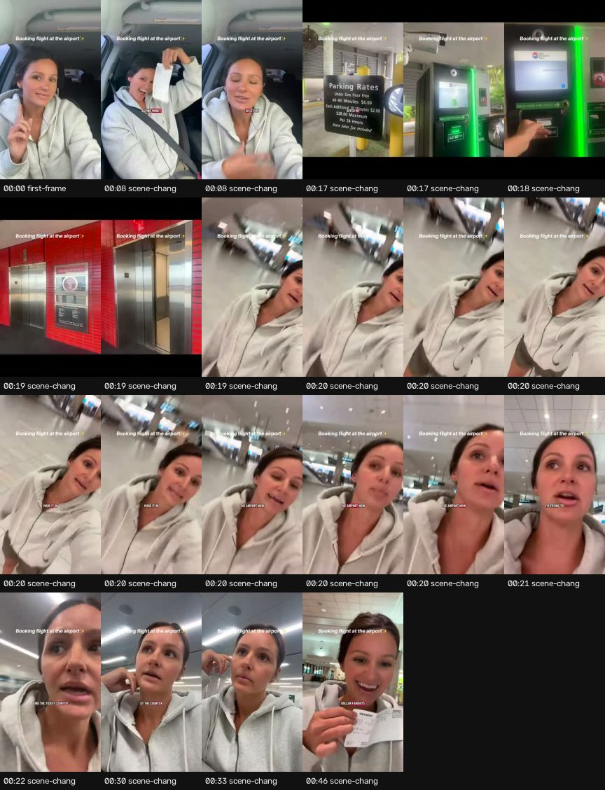
실행 기록OpenCV · 626개 0.1초 구간
62.533초 · 1,876프레임 · 자동 후보 11개 · 확인된 하드컷 미확인개 · 0.1초 RMS -40.7~-4.5 dBFS
측정 CSV · 측정 설정 · 자동 후보 JSON
When your hotel in Tokyo has 24/7 free-flow sake and a rooftop foot bath with a view of Tokyo Skytree, it gets really hard to convince yours
공개 조회 미확인 · 보관 조회 5,578,388 · 게시 미확인 · 보관 게시 2026-01-12 · 공개 구독 미확인
기존 분석 인용 ·
0.0초 객실 → 1.567초 나무 그릇 → 2.700초 키카드 → 4.200초 디스펜서. 9.700초 이후 인물과 야경, 11.733초 타워. 이전 경계 검증 8개.
기존 Watch와 OpenCV 보고서
Meet V, The new muse of Paradise City. With him, the resort unfolds like a world of its own. When his eyes close, art, flavor, music, and de
공개 조회 미확인 · 보관 조회 5,400,748 · 게시 미확인 · 보관 게시 2025-12-01 · 확인 2026-11-22T16:48:21+09:00 · 공개 구독 미확인
미분석 · 공개 브라우저에서 해당 게시물 전체 영상·음성 쌍을 검증하지 못함.
3,000 pillows?! little me would’ve lost her mind 🥹💗 베개 3,000개라니?! 어릴 때의 내가 보면 기절할 듯
공개 조회 미확인 · 보관 조회 4,884,301 · 게시 미확인 · 보관 게시 2026-10-27 · 확인 2026-11-22T16:45:09+09:00 · 공개 구독 미확인
장면 표본 육안 대조 ·
0초 베개가 가득한 공연장, 1.6초 베개 가까이 인물, 3.2초 붉은 조명, 6.4초 무대와 관객, 8초 천장 조명, 9.6초 누운 시선. 작은 영어 고정 문구. 호텔 풀이 아니다.
원본 장면 바둑판
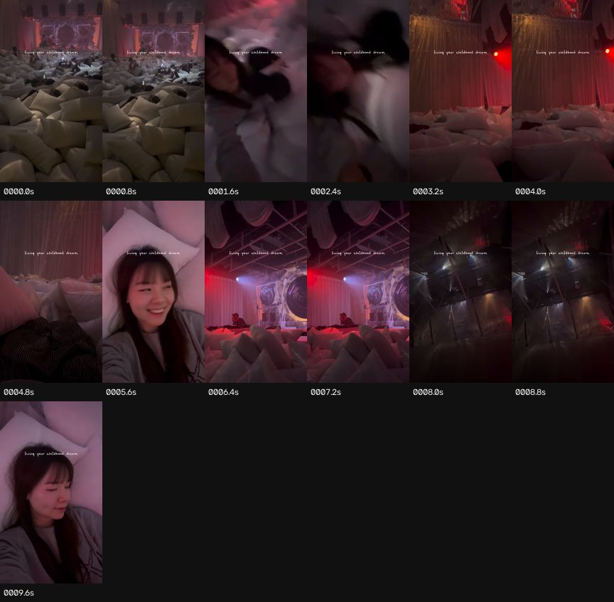
Watch · 추출 12장
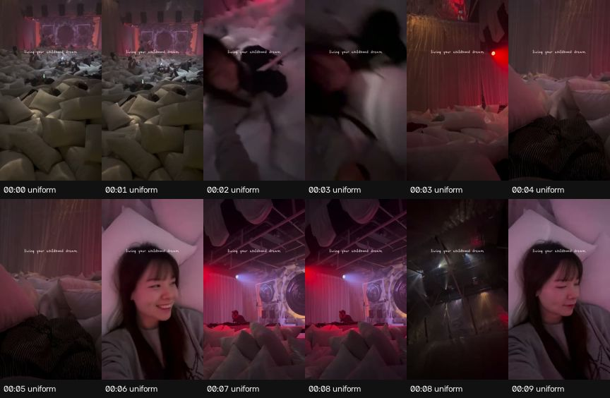
실행 기록OpenCV · 100개 0.1초 구간
9.933초 · 298프레임 · 자동 후보 6개 · 확인된 하드컷 미확인개 · 0.1초 RMS -20.0~-4.9 dBFS
측정 CSV · 측정 설정 · 자동 후보 JSON
The doctor said that to me🤷🏻♂️
공개 조회 미확인 · 보관 조회 4,649,212 · 게시 2026-11-03T16:45:34+09:00 · 보관 게시 2026-11-03 · 확인 2026-11-22T16:45:10+09:00 · 공개 구독 미확인
장면 표본 육안 대조 ·
0–9.9초 거울 앞에서 사람이 햄버거를 먹는 개그. 상단 고정 자막 1종으로 풍경 이동 참고에서 제외한다.
원본 장면 바둑판

Watch · 추출 12장
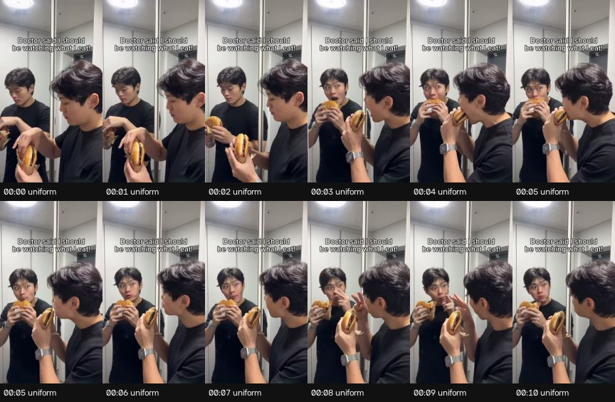
실행 기록OpenCV · 108개 0.1초 구간
10.766초 · 323프레임 · 자동 후보 0개 · 확인된 하드컷 미확인개 · 0.1초 RMS -42.2~-14.7 dBFS
측정 CSV · 측정 설정 · 자동 후보 JSON
여행사 사장의 항공권 구매 꿀팁 🛫🎟️ 1️⃣ 베스트 날짜 고르기 스카이스캐너(시크릿 모드 필수✨)에서 내가 가고 싶은 날짜 선택 후 “변경 가능 날짜” 클릭하면 선택한 날짜 기준 +,-3일 저렴한 항공편을 한눈에 보여줘요 👀 2️⃣항공권은 빨리
공개 조회 미확인 · 보관 조회 3,987,324 · 게시 2025-01-26T08:45:59+09:00 · 보관 게시 2025-01-26 · 확인 2026-11-22T16:45:11+09:00 · 공개 구독 미확인
장면 표본 육안 대조 ·
0초 이동하는 가까운 실내, 2.8초 노트북과 진행자, 5.6–16.8초 검색·도표, 19.6–33.6초 화면 예시와 진행자로 돌아간다. 상하 정보 문구가 바뀐다.
원본 장면 바둑판

Watch · 추출 8장
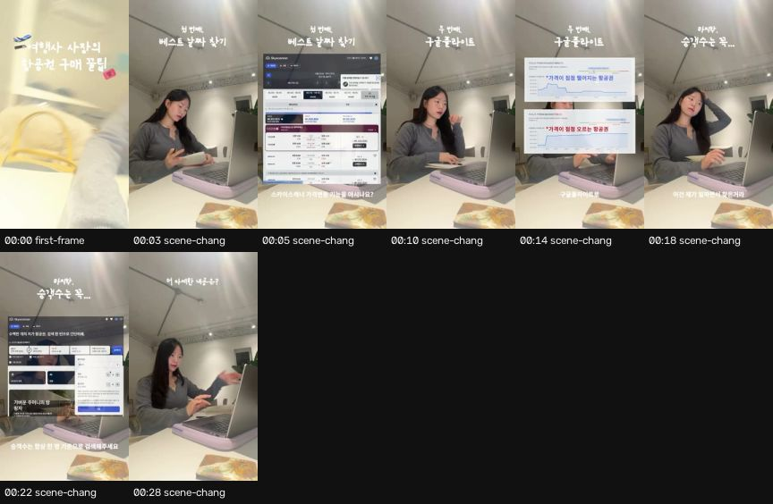
실행 기록OpenCV · 343개 0.1초 구간
34.233초 · 1,027프레임 · 자동 후보 6개 · 확인된 하드컷 미확인개 · 0.1초 RMS -32.1~-6.0 dBFS
측정 CSV · 측정 설정 · 자동 후보 JSON
Meet V, The new muse of Paradise City. With him, the resort unfolds like a world of its own. When his eyes close, art, flavor, music, and de
공개 조회 미확인 · 보관 조회 3,956,552 · 게시 미확인 · 보관 게시 2025-12-01 · 확인 2026-11-22T16:45:12+09:00 · 공개 구독 미확인
장면 표본 육안 대조 ·
0초 대칭 아치와 샹들리에, 6.2–24.8초 인물과 근접 소품, 31–49.6초 여러 실내 구도, 55.8–68.2초 인물·라디오, 74.4초 수영장이 파랗게 보이는 외부 전체 전망과 로고. 실제 다른 호텔 광고이며 시설 기하 참고 대상은 Spinne 공식 사진이다.
원본 장면 바둑판
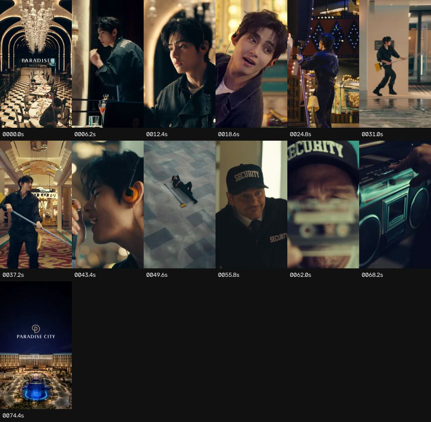
Watch · 추출 22장
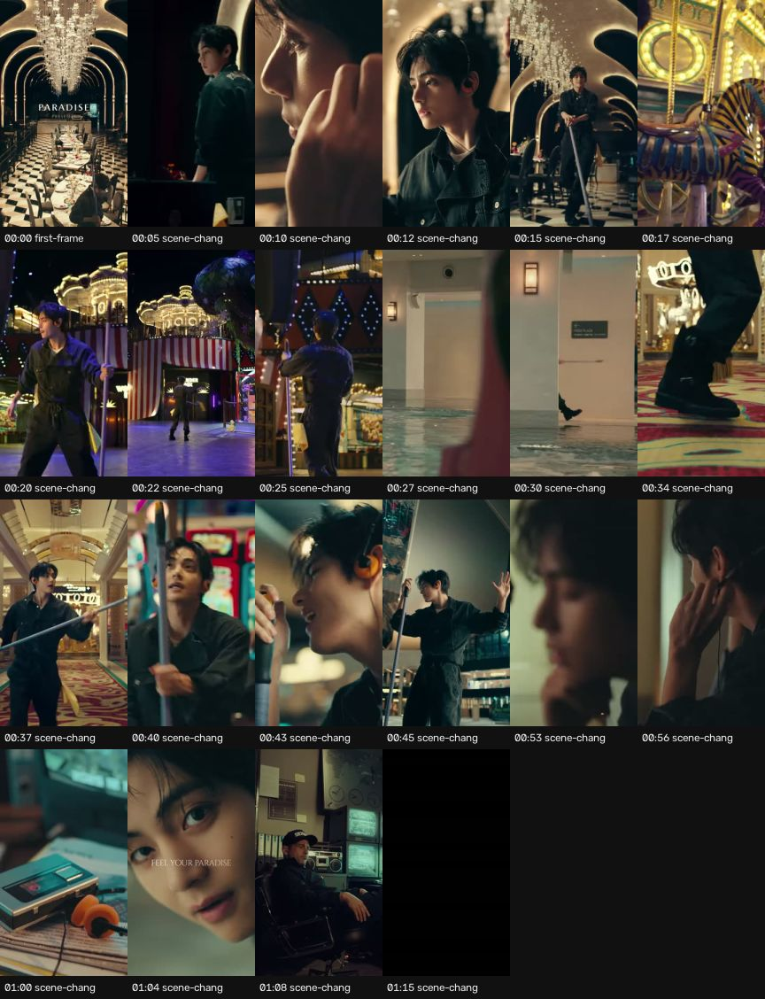
실행 기록OpenCV · 752개 0.1초 구간
75.117초 · 1,801프레임 · 자동 후보 41개 · 확인된 하드컷 미확인개 · 0.1초 RMS -123.9~-9.7 dBFS
측정 CSV · 측정 설정 · 자동 후보 JSON
한국에서 괌은 인기 관광지인데요. 한 저비용항공사 예약 사이트에는 인천-괌 노선이 편도 10만 원 초반대에 올라와 화제가 되고 있습니다.
공개 조회 미확인 · 보관 조회 3,931,530 · 게시 2025-11-08T13:59:12+09:00 · 보관 게시 2025-11-08 · 확인 2026-11-22T16:48:00+09:00 · 공개 구독 미확인
미분석 · 공개 브라우저에서 해당 게시물 전체 영상·음성 쌍을 검증하지 못함.
해병대 멋찌다. 왜 우리 아들생각이 나는지요 ㅎㅎㅎㅎ.
공개 조회 미확인 · 보관 조회 3,881,469 · 게시 미확인 · 보관 게시 2026-09-04 · 확인 2026-11-22T16:47:59+09:00 · 공개 구독 미확인
미분석 · 공개 브라우저에서 해당 게시물 전체 영상·음성 쌍을 검증하지 못함.
ถ้าเจอผีญี่ปุ่นต้องพูดภาษาอะไรอ่ะ หลอนเบาๆ 😱🇯🇵 ? รีวิวห้อง 400 กว่าบ้านในโตเกียว สำหรับคนงบน้อยย่านแรงงานญี่ปุ่น รายละเอียดแอปแดงนะฮะ ย่า
공개 조회 미확인 · 보관 조회 3,754,160 · 게시 2026-08-29T18:54:23+09:00 · 보관 게시 2026-08-29 · 확인 2026-11-22T16:48:00+09:00 · 공개 구독 미확인
장면 표본 육안 대조 ·
0초 작은 객실, 2.8–5.6초 복도와 문 이동, 7.0–8.4초 문턱 너머 침대, 9.8초 넓은 내부, 12.6–16.8초 앉아서 음식. 상단 태국어 문구가 바뀐다.
원본 장면 바둑판
Watch · 추출 8장
실행 기록OpenCV · 170개 0.1초 구간
16.966초 · 509프레임 · 자동 후보 6개 · 확인된 하드컷 미확인개 · 0.1초 RMS -25.3~-6.9 dBFS
측정 CSV · 측정 설정 · 자동 후보 JSON
Da1TpXWFYgz · gisselle.travelhacks
Send this to your travel buddy
공개 조회 미확인 · 보관 조회 3,524,735 · 게시 2026-07-16T09:02:55+09:00 · 보관 게시 2026-07-16 · 확인 2026-11-22T16:48:02+09:00 · 공개 구독 미확인
미분석 · 공개 브라우저에서 해당 게시물 전체 영상·음성 쌍을 검증하지 못함.
탄산+뽕따맛 바다물젤리🌊 구름젤리는 밀키스맛☁️
공개 조회 미확인 · 보관 조회 3,277,042 · 게시 2025-07-10T00:45:14+09:00 · 보관 게시 2025-07-09 · 확인 2026-11-22T16:48:02+09:00 · 공개 구독 미확인
장면 표본 육안 대조 ·
0초 바다색 젤리와 인물 고정 구도, 2.2초 숟가락, 4.4초 젤리 단면, 9.9초부터 위 장식과 인물 클로즈업. 화면 속 바다색은 음식 소재다.
원본 장면 바둑판

Watch · 추출 13장
실행 기록OpenCV · 133개 0.1초 구간
13.233초 · 397프레임 · 자동 후보 0개 · 확인된 하드컷 미확인개 · 0.1초 RMS -80.1~-9.7 dBFS
측정 CSV · 측정 설정 · 자동 후보 JSON
일본에서 쇼핑할 때 여권만 보여주면 소비세를 즉시 면제해 주던 면세 제도가 11월부터 '사후 환급' 방식으로 바뀝니다.
공개 조회 미확인 · 보관 조회 3,271,469 · 게시 2026-10-29T17:01:56+09:00 · 보관 게시 2026-10-29 · 확인 2026-11-22T16:48:01+09:00 · 공개 구독 미확인
미분석 · 공개 브라우저에서 해당 게시물 전체 영상·음성 쌍을 검증하지 못함.
직장인 장거리 여행? 이대로 하면 가능해요! 같이 갈 @@ 태그 + 🔖저장하고 여행갈 때 꺼내보세요. ⠀ ⠀ 🗺️ 멜버른 여행의 특징 - 연차쓰고 다녀오기 좋은 여행지✨ - 시차는 한국보다 2시간 빨라요 (시차적응 필요✖️) - 멜버른 시내는 꽉찬
공개 조회 미확인 · 보관 조회 3,053,819 · 게시 미확인 · 보관 게시 2023-11-22 · 확인 2026-11-22T16:48:03+09:00 · 공개 구독 미확인
미분석 · 공개 브라우저에서 해당 게시물 전체 영상·음성 쌍을 검증하지 못함.
저장해서 여행 갈 때 써먹기‼️ ⠀ ✔️ 알려주고 싶은 친구에게 공유 ⠀ 청소년부터 만 33세까지 최대 40%할인 무조건! 할인 받아서 타세요(단호) ⠀ 신청도 간편하게 휴대폰 인증으로 끝! 미리 미리 해두고 올 봄에 기차여행 가요 💕 ⠀ ⠀ ⠀ ✅
공개 조회 미확인 · 보관 조회 3,028,390 · 게시 2024-02-17T20:57:58+09:00 · 보관 게시 2024-02-17 · 확인 2026-11-22T16:48:03+09:00 · 공개 구독 미확인
미분석 · 공개 브라우저에서 해당 게시물 전체 영상·음성 쌍을 검증하지 못함.
한국 최초로 생긴 우주 휴양지 리조트 가본 후기ㅋㅋㅋ (제작지원) 8월에 따끈따끈하게 국내 최초로 오픈한 우주 리조트에서 이색적인 휴양 즐기는 컨셉의 신상 체험형 미디어 테마파크인데, 우주 컨셉으로 공간들도 진짜 다양하게 꾸며져 있어서 공간마다 구경하
공개 조회 미확인 · 보관 조회 2,860,787 · 게시 2025-08-19T20:40:30+09:00 · 보관 게시 2025-08-19 · 확인 2026-11-22T16:48:03+09:00 · 공개 구독 미확인
미분석 · 공개 브라우저에서 해당 게시물 전체 영상·음성 쌍을 검증하지 못함.
크리스마스 D-56🎄삿포로 총정리 파일 공유 💗댓글에 ‘정보’ 달면 삿포로 5박 6일 총정리본 DM 보내드리겠습니다!💗 일정+숙소+총경비+비에이 투어+아쿠아리움+코디 등등 모든 정보를 파일에 꽉꽉 담았으니 삿포로 여행 계획 있으신 분들은 꼭
공개 조회 미확인 · 보관 조회 2,530,352 · 게시 미확인 · 보관 게시 2026-09-19 · 확인 2026-11-22T16:48:04+09:00 · 공개 구독 미확인
미분석 · 공개 브라우저에서 해당 게시물 전체 영상·음성 쌍을 검증하지 못함.
슬슬 날 추워지니 일본여행 땡기는 이유
공개 조회 미확인 · 보관 조회 2,364,662 · 게시 2026-10-16T18:17:13+09:00 · 보관 게시 2026-10-16 · 확인 2026-11-22T16:48:04+09:00 · 공개 구독 미확인
미분석 · 공개 브라우저에서 해당 게시물 전체 영상·음성 쌍을 검증하지 못함.
항공권 최대 70% 할인 받는 꿀팁!
공개 조회 미확인 · 보관 조회 2,316,409 · 게시 2024-03-06T22:05:22+09:00 · 보관 게시 2024-03-06 · 확인 2026-11-22T16:48:04+09:00 · 공개 구독 미확인
미분석 · 공개 브라우저에서 해당 게시물 전체 영상·음성 쌍을 검증하지 못함.
जैसलमेर घूमने का प्लान है? 🏜️❤️ तो ये 2 Days Jaisalmer Itinerary सेव कर लो! जैसलमेर फोर्ट, पटवों की हवेली, गड़ीसर लेक, कुलधरा विलेज और सम स
공개 조회 미확인 · 보관 조회 2,305,436 · 게시 2026-10-15T19:57:09+09:00 · 보관 게시 2026-10-15 · 확인 2026-11-22T16:48:06+09:00 · 공개 구독 미확인
미분석 · 공개 브라우저에서 해당 게시물 전체 영상·음성 쌍을 검증하지 못함.
DemMtvHvHkG · inder_khushi_travel_vlogs
Delhi to Sri Lanka sirf ₹5000 ch? 😳 Ehh route kise nu nahi pata — train, bus te ferry da desi jugaad! Full video ch dekho kivey ethe tusi v
공개 조회 미확인 · 보관 조회 2,296,777 · 게시 2026-10-17T22:23:10+09:00 · 보관 게시 2026-10-17 · 확인 2026-11-22T16:48:06+09:00 · 공개 구독 미확인
장면 표본 육안 대조 ·
0초 열차 측면, 3.2–4.8초 지도, 6.4초 초록과 물가를 내려다보는 열차, 8초 노을 항구, 9.6초 배, 16–17.6초 숲 위 고립된 바위. 자막과 경로 도식은 별개 방식이다.
원본 장면 바둑판

Watch · 추출 10장
실행 기록OpenCV · 202개 0.1초 구간
20.200초 · 606프레임 · 자동 후보 9개 · 확인된 하드컷 미확인개 · 0.1초 RMS -29.1~-6.8 dBFS
측정 CSV · 측정 설정 · 자동 후보 JSON
비행기에선 신발 벗는게 매너입니다
공개 조회 미확인 · 보관 조회 2,296,561 · 게시 2026-01-30T17:59:56+09:00 · 보관 게시 2026-01-30 · 확인 2026-11-22T16:48:05+09:00 · 공개 구독 미확인
미분석 · 공개 브라우저에서 해당 게시물 전체 영상·음성 쌍을 검증하지 못함.
Bali feels, right here in Gujarat! 🌴✨ From gorgeous private pool villas and stunning Pavagadh views to relaxing spa sessions and fun-filled
공개 조회 미확인 · 보관 조회 2,236,344 · 게시 미확인 · 보관 게시 2026-10-30 · 확인 2026-11-22T16:48:08+09:00 · 공개 구독 미확인
미분석 · 공개 브라우저에서 해당 게시물 전체 영상·음성 쌍을 검증하지 못함.
B U D G E T // S W I S S 🇨🇭 || Coop there it is! My fav hack to keep Switzerland travel budget friendly
공개 조회 미확인 · 보관 조회 2,099,751 · 게시 2026-09-20T05:53:17+09:00 · 보관 게시 2026-09-20 · 확인 2026-11-22T16:48:07+09:00 · 공개 구독 미확인
미분석 · 공개 브라우저에서 해당 게시물 전체 영상·음성 쌍을 검증하지 못함.
Book flight tickets for just ₹150! ✈️😱 . . . . .
공개 조회 미확인 · 보관 조회 2,084,195 · 게시 미확인 · 보관 게시 2025-09-02 · 확인 2026-11-22T16:48:06+09:00 · 공개 구독 미확인
미분석 · 공개 브라우저에서 해당 게시물 전체 영상·음성 쌍을 검증하지 못함.
피자 두판을 만원에 파는 곳 이태리하우스피자 전화 예약하고 가시는 거 추천드립니다
공개 조회 미확인 · 보관 조회 2,051,248 · 게시 2026-10-18T09:12:25+09:00 · 보관 게시 2026-10-18 · 확인 2026-11-22T16:48:09+09:00 · 공개 구독 미확인
미분석 · 공개 브라우저에서 해당 게시물 전체 영상·음성 쌍을 검증하지 못함.
잃어버린 물건? 고대로 찾아드림👊🏻 | KBS 방송 KBS 2TV [다큐멘터리 3일] 736회 매주 [월] 저녁 8시 30분 방송
공개 조회 미확인 · 보관 조회 1,966,681 · 게시 2026-09-09T11:31:43+09:00 · 보관 게시 2026-09-09 · 확인 2026-11-22T16:48:08+09:00 · 공개 구독 미확인
미분석 · 공개 브라우저에서 해당 게시물 전체 영상·음성 쌍을 검증하지 못함.
(저장 공유) 35,000원에 도쿄 가기🗼 여러분 제가 최저가 여행을 분기마다 한번씩 다녀오는데 이번 최저가 여행지는 두구두구~ 도쿄 입니다! (빠밤) 근데 도쿄가는 왕복 항공권을 편도 35,000원에 예약을 성공 했답니다?? (세상에 마상에) 유류
공개 조회 미확인 · 보관 조회 1,847,572 · 게시 2024-05-05T23:14:01+09:00 · 보관 게시 2024-05-05 · 확인 2026-11-22T16:48:07+09:00 · 공개 구독 미확인
미분석 · 공개 브라우저에서 해당 게시물 전체 영상·음성 쌍을 검증하지 못함.
4성급 호텔 서비스가 참... 좋습니다 여긴 하얏트 도쿄 긴자 입니다.
공개 조회 미확인 · 보관 조회 1,764,759 · 게시 미확인 · 보관 게시 2026-08-26 · 확인 2026-11-22T16:48:10+09:00 · 공개 구독 미확인
미분석 · 공개 브라우저에서 해당 게시물 전체 영상·음성 쌍을 검증하지 못함.
여러분, 부산아쿠아리움에도 상어를 볼 수 있다구요 🦈 지금 핫한 친구와는 다른 종이이지만 다양한 상어들이 많이 있답니다..! 오후 2시에는 상어 먹이주기 체험까지! 안전하고 편하게 상어 구경가능😎
공개 조회 미확인 · 보관 조회 1,535,112 · 게시 미확인 · 보관 게시 2026-09-20 · 확인 2026-11-22T16:48:10+09:00 · 공개 구독 미확인
미분석 · 공개 브라우저에서 해당 게시물 전체 영상·음성 쌍을 검증하지 못함.
🇮🇳✈️ HOW EXPENSIVE IS YOUR NEXT INTERNATIONAL TRIP? 💰 BUDGET GUIDE FOR INDIAN TRAVELLERS 🌍 From generally budget-friendly to seriously e
공개 조회 미확인 · 보관 조회 1,521,823 · 게시 2026-10-03T21:00:22+09:00 · 보관 게시 2026-10-03 · 확인 2026-11-22T16:48:09+09:00 · 공개 구독 미확인
미분석 · 공개 브라우저에서 해당 게시물 전체 영상·음성 쌍을 검증하지 못함.
⬇️ 아이들하고 호텔, 리조트 가면 가장 먼저 하는 것 ⚠️ 위험 하거나 다칠 가능성 있는 곳 찾기(모서리) 아이들이 놀다가 파손하면 큰일나는 물건들 찾기 🙋♂️ 안녕하세요. 실례지만 객실 문 앞 도자기 가격이 얼마인가요? 💁♀️혹시 깨졌나요?
공개 조회 미확인 · 보관 조회 1,495,541 · 게시 2024-12-21T03:59:13+09:00 · 보관 게시 2024-12-21 · 확인 2026-11-22T16:48:12+09:00 · 공개 구독 미확인
미분석 · 공개 브라우저에서 해당 게시물 전체 영상·음성 쌍을 검증하지 못함.
소피텔 혜린 단톡특가 연말포함 마켓 🎅🏻🎄💕 ☃️ (미리 준비해야해요 연말, 연초 호캉스!!) 연말에 다들 호캉스가구싶다고 요청 너무 많으셨었는데요 그래서 하이엔드급 5성급 호텔인 석촌호수뷰 소피텔로 데려왔습니다 🤭 저는 주수사진을 너무 못
공개 조회 미확인 · 보관 조회 1,490,617 · 게시 2025-10-26T21:24:24+09:00 · 보관 게시 2025-10-26 · 확인 2026-11-22T16:48:11+09:00 · 공개 구독 미확인
미분석 · 공개 브라우저에서 해당 게시물 전체 영상·음성 쌍을 검증하지 못함.
한번쯤은 인스타에서 봤던 그 호텔, 10만원대라고.? 결론은 10만원대에도 갈 수 있긴 해요!!💡 근데 후기를 찾아보면 저렴한 룸의 경우에는 깨끗하긴 하지만 노후된 느낌이라 별로 안 좋아하시는 분들도 계시더라고요! 고민하다가 저는 새로 리모델링한 룸
공개 조회 미확인 · 보관 조회 1,472,252 · 게시 2025-08-25T20:41:16+09:00 · 보관 게시 2025-08-25 · 확인 2026-11-22T16:48:10+09:00 · 공개 구독 미확인
미분석 · 공개 브라우저에서 해당 게시물 전체 영상·음성 쌍을 검증하지 못함.
나트랑 리조트에서 팁 드리구 동물원 만들기!!✨ 오천원의 행복이란..🤑 When you tip at the resort, you get a whole zoo!
공개 조회 미확인 · 보관 조회 1,469,735 · 게시 2026-08-15T17:28:33+09:00 · 보관 게시 2026-08-15 · 확인 2026-11-22T16:48:13+09:00 · 공개 구독 미확인
미분석 · 공개 브라우저에서 해당 게시물 전체 영상·음성 쌍을 검증하지 못함.
부산 윤남노 꽃냉삼 맛집 오픈런하고 누구보다 행복한 노처녀...
공개 조회 미확인 · 보관 조회 1,428,008 · 게시 2026-09-26T23:19:50+09:00 · 보관 게시 2026-09-26 · 확인 2026-11-22T16:48:13+09:00 · 공개 구독 미확인
장면 표본 육안 대조 ·
0초 식탁과 인물, 5–35초 비슷한 프레임에서 음식과 손 역할이 바뀌고 40초 음식 클로즈업, 60초 인사. 하단 한국어 자막이 이어진다.
원본 장면 바둑판

Watch · 추출 19장
실행 기록OpenCV · 607개 0.1초 구간
60.666초 · 1,820프레임 · 자동 후보 8개 · 확인된 하드컷 미확인개 · 0.1초 RMS -27.9~-8.7 dBFS
측정 CSV · 측정 설정 · 자동 후보 JSON
수 많은 곳들을 여행하면서 호텔이 곧 여행이 되었던 찐 추천 호텔 7곳 🫶 결국 제가 기억하는 여행은 메리어트 본보이가 함께였네요💕 @marriottbonvoy 여러분도 저처럼 메리어트 본보이와 함께한 추억을 공유하고 10만 포인트를 받아가세요❗
공개 조회 미확인 · 보관 조회 1,418,341 · 게시 2026-10-23T14:26:24+09:00 · 보관 게시 2026-10-22 · 확인 2026-11-22T16:48:11+09:00 · 공개 구독 미확인
미분석 · 공개 브라우저에서 해당 게시물 전체 영상·음성 쌍을 검증하지 못함.
Hidden Jibhi | Perfect Travel Itinerary, Skip Manali this year and explore the hidden beauty of Jibhi! Agar crowd se door offbeat Himachal t
공개 조회 미확인 · 보관 조회 1,397,880 · 게시 2026-08-29T23:57:05+09:00 · 보관 게시 2026-08-29 · 확인 2026-11-22T16:48:14+09:00 · 공개 구독 미확인
미분석 · 공개 브라우저에서 해당 게시물 전체 영상·음성 쌍을 검증하지 못함.
솥뚜껑바베큐 있는 강원도 촌캉스 숙소🏡 진짜진짜 저만 알고싶은 숙소...🍠 촌캉스 ❌컨셉❌ 아니고 찐 of 찐 촌캉스 할 수 있는 곳 여기입니다💛 (✨실내는 리모델링 해서 깨끗함!!!✨) 성인 4명 기준 17만원에 솥뚜껑바베큐+아궁이백숙+불멍까지
공개 조회 미확인 · 보관 조회 1,369,958 · 게시 2025-11-11T20:07:14+09:00 · 보관 게시 2025-11-11 · 확인 2026-11-22T16:48:14+09:00 · 공개 구독 미확인
미분석 · 공개 브라우저에서 해당 게시물 전체 영상·음성 쌍을 검증하지 못함.
요즘 후쿠오카보다 더 뜨고있는 옆동네 ‘기타큐슈’ ✈️ 레트로한 감성을 좋아한다면 꼭 가봐야하는 곳 🎞️ 항공권 평균 ‘20만원대 초반’, 숙소 1박 ‘10만원 이내’로 가성비 여행지로도 최고에요👀 사람이 많지않아 여유롭게 구경하기 좋고 맛있는 음
공개 조회 미확인 · 보관 조회 1,331,158 · 게시 2026-03-16T20:06:34+09:00 · 보관 게시 2026-03-16 · 확인 2026-11-22T16:48:12+09:00 · 공개 구독 미확인
미분석 · 공개 브라우저에서 해당 게시물 전체 영상·음성 쌍을 검증하지 못함.
ㅋㅋㅋㅋㅋㅋㅋㅋ 다들 이러신거 맞나요 ㅋㅋㅋㅋㅋㅋㅋㅋ 여행 처음부터 나의 웃음벨 시아버지
공개 조회 미확인 · 보관 조회 1,314,736 · 게시 2026-09-29T09:35:45+09:00 · 보관 게시 2026-09-29 · 확인 2026-11-22T16:48:15+09:00 · 공개 구독 미확인
미분석 · 공개 브라우저에서 해당 게시물 전체 영상·음성 쌍을 검증하지 못함.
Jgn lupa berdoa 🙌🏻🙏
공개 조회 미확인 · 보관 조회 1,302,742 · 게시 미확인 · 보관 게시 2026-10-16 · 확인 2026-11-22T16:48:16+09:00 · 공개 구독 미확인
미분석 · 공개 브라우저에서 해당 게시물 전체 영상·음성 쌍을 검증하지 못함.
다낭여행은 50만원으로 충분해!!!
공개 조회 미확인 · 보관 조회 1,258,585 · 게시 2023-07-26T17:15:00+09:00 · 보관 게시 2023-07-25 · 확인 2026-11-22T16:48:13+09:00 · 공개 구독 미확인
미분석 · 공개 브라우저에서 해당 게시물 전체 영상·음성 쌍을 검증하지 못함.
청계천 야외도서관 자리 만석임📚 저녁에 갔더니 진짜 만석이라 도우미분께 물어봤는데 “비는 자리 생기면 앉으시면 돼요!“ 언제 비는지 몰라요 ㅠ근데 조금 기다리니 자리 나서 바로 앉았어요 책도 자유롭게 볼 수 있고 밤에는 책 전용 랜턴까지 있어서 야외
공개 조회 미확인 · 보관 조회 1,247,954 · 게시 2026-09-18T22:35:37+09:00 · 보관 게시 2026-09-19 · 확인 2026-11-22T16:48:16+09:00 · 공개 구독 미확인
미분석 · 공개 브라우저에서 해당 게시물 전체 영상·음성 쌍을 검증하지 못함.
飛行機に乗る人の9割が知らない話。 実は、空席のまま離陸すると、 航空会社は、その席から得られたはずの売上を逃してしまいます。 特に出発間際、予約変更やキャンセルで空席が増えると、 席を埋めるために、期間限定の割引運賃が出ることも。 ただ、こうしたお得な運賃は、 いつもの検索では
공개 조회 미확인 · 보관 조회 1,221,787 · 게시 2026-10-30T11:57:12+09:00 · 보관 게시 2026-10-29 · 확인 2026-11-22T16:48:17+09:00 · 공개 구독 미확인
미분석 · 공개 브라우저에서 해당 게시물 전체 영상·음성 쌍을 검증하지 못함.
아 깜짝이야.
공개 조회 미확인 · 보관 조회 1,219,218 · 게시 2024-10-06T19:23:18+09:00 · 보관 게시 2024-10-06 · 확인 2026-11-22T16:48:15+09:00 · 공개 구독 미확인
미분석 · 공개 브라우저에서 해당 게시물 전체 영상·음성 쌍을 검증하지 못함.
✈️ Business Class to China for Economy Price
공개 조회 미확인 · 보관 조회 1,205,640 · 게시 2026-11-02T13:55:07+09:00 · 보관 게시 2026-11-02 · 확인 2026-11-22T16:48:18+09:00 · 공개 구독 미확인
미분석 · 공개 브라우저에서 해당 게시물 전체 영상·음성 쌍을 검증하지 못함.
🇰🇷 내일, 광안리 밤하늘이 다시 물듭니다. 작년 광복절 광안리 M 드론라이트쇼 특별공연을 타임랩스로 담아봤는데요✨ 올해도 8월 15일 광복절 특별공연이 펼쳐집니다. 📍 광안리해수욕장 📅 8월 15일(토) ⏰ 본 공연 20:00 / 22:00
공개 조회 미확인 · 보관 조회 1,187,515 · 게시 2026-08-14T18:21:14+09:00 · 보관 게시 2026-08-14 · 확인 2026-11-22T16:48:18+09:00 · 공개 구독 미확인
미분석 · 공개 브라우저에서 해당 게시물 전체 영상·음성 쌍을 검증하지 못함.
간판이 눈에 띄질 않아 모르시는 분들이 많더라고요 ,, 물놀이하러 월정 쪽 많이 가시던데 6,000원에 예쁜 추억 남겨보시길 ♡ 📍보롬사진관 월정 제주특별자치도 제주시 구좌읍 해맞이해안로 474
공개 조회 미확인 · 보관 조회 1,180,677 · 게시 2026-09-02T00:34:39+09:00 · 보관 게시 2026-09-01 · 확인 2026-11-22T16:48:16+09:00 · 공개 구독 미확인
미분석 · 공개 브라우저에서 해당 게시물 전체 영상·음성 쌍을 검증하지 못함.
Can you believe this all belongs to a private suite 🤯 hard to not act like this 🙃 This is the Serenity Room at @calilo_ios Hotel located i
공개 조회 미확인 · 보관 조회 1,168,271 · 게시 미확인 · 보관 게시 2026-09-17 · 확인 2026-11-22T16:48:19+09:00 · 공개 구독 미확인
미분석 · 공개 브라우저에서 해당 게시물 전체 영상·음성 쌍을 검증하지 못함.
출산(제왕절개)후 부터 생긴 극심한 생리통과 골반통 잦은 방광염과 자궁근종으로 산부인과 검사와 대학병원 원장님이 추천해준 여성 비뇨기과 검사까지 3년동안 할 수있는 모든검사는 다 해봤지만 원인을 못찾고ㅡㅡ 3개월에 한번씩 끊어줘야하는 약을 3년동안 먹
공개 조회 미확인 · 보관 조회 1,154,865 · 게시 2026-10-17T12:17:49+09:00 · 보관 게시 2026-10-16 · 확인 2026-11-22T16:48:20+09:00 · 공개 구독 미확인
미분석 · 공개 브라우저에서 해당 게시물 전체 영상·음성 쌍을 검증하지 못함.
여행 총경비 6만원대, 이국적인 바다와 낭만 가득한 남해 여행 코스 공유🌊🐈 조용한 바닷가 마을에 자리잡은 귀여운 가게들과 해외에 온듯한 이국적인 바다들이 모여있는 이 곳,,🫧 여름 물놀이도 즐기고 조용히 힐링할 수 있는 시간이 필요하다면 지금
공개 조회 미확인 · 보관 조회 1,128,153 · 게시 미확인 · 보관 게시 2026-08-11 · 확인 2026-11-22T16:48:18+09:00 · 공개 구독 미확인
미분석 · 공개 브라우저에서 해당 게시물 전체 영상·음성 쌍을 검증하지 못함.